方舟动物园
Ark Nova · 官方中文规则书全文转录（游人码头）
本页整理自微信公众号「桌游怎么玩」《方舟动物园，Ark Nova【桌游规则】》发布的《方舟动物园》(Ark Nova) 官方中文规则书（游人码头简体中文版，©2021 Feuerland，中文翻译：谭钧颐，全书 20 页含封面），逐页全文转录，原书扫描图随文嵌入——点击任意图片即可放大查看。规则内容归 Feuerland Verlagsgesellschaft、游人心者及版权方所有，转录仅供个人学习查阅。
整理说明：游人码头官译用语照录（「声望」「魅力」「保护点数」「协会事务员」「便签簿」「精选」「档案夹」「展示区」「饲养区/贩售亭/休憩亭」「萌宠园/爬行馆/鸟禽馆」「独有建筑」等）。原书用词与排印照录：「收纳托盘/收纳托盒」并存（P.4），「并提供了」「该地图适合在进行过首次游戏后的新手玩家」「优势的的」（P.4），「只不过一种是放置板块，而这种是移除事务员」（P.7），「包扩水域和岩石格」「且相邻水域格的饲养区」（P.12），「增加你动物园的魅力,点数」（P.13），「即使如果休息标记离抵达最终格不足」（P.17），「放置便签簿上」（P.18），「如果出现平局。则」（P.19），「详见下方的，」「交错)。则」、测试者「Christan Brinker」拼写（P.20），均为原书排印如此。P.4 个人设置图注与 P.17 地图图注中手写体小注依扫描分辨率部分无法辨认，已照实标注。〔图 …〕说明与部分小节标题为整理所拟；随书另附《术语表》与《图标概览》两本小册子（P.3 配件表「其它」所列），本页亦一并在扩展页收录其扩展版内容。
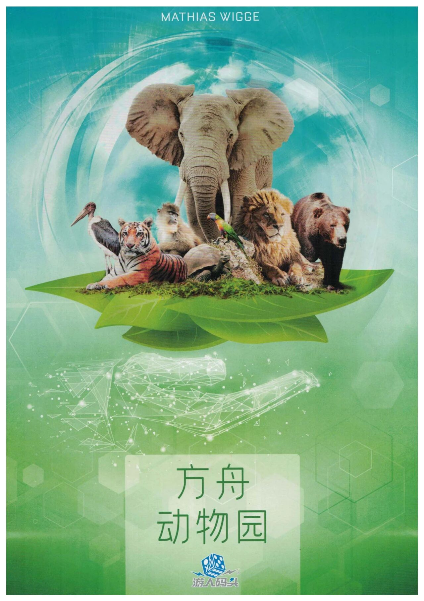
（本页为封面）
封面
MATHIAS WIGGE
〔图 封面主图——绿色调插画，绿色叶片托起的大象、老虎、狮子、熊、鹳、猴、陆龟、鹦鹉等动物，背景有玻璃穹顶轮廓与光点线路图案〕
方舟动物园
〔图 "游人码头"商标——蓝色骰子图案标志〕
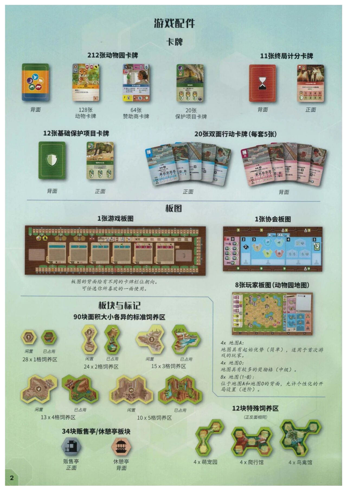
游戏配件
卡牌
212张动物园卡牌
〔图 卡牌背面——橙绿配色，中央环绕五枚圆形动物图标（鸟、蟹、猴、象、熊等剪影）〕背面
〔图 猎豹照片卡牌〕128张 动物卡牌
〔图 人物照片卡牌（车内场景）〕64张 赞助商卡牌
〔图 洞穴蝙蝠照片卡牌〕20张 保护项目卡牌
11张终局计分卡牌
〔图 暗红色卡背，中央沙漏图案〕背面
〔图 双峰驼照片卡牌，下部为计分表格〕正面
12张基础保护项目卡牌
〔图 绿色卡背，中央盾牌图案〕背面
〔图 大象照片卡牌，下部有三枚盾形计分标记（可见数字 5、3、2）〕正面
20张双面行动卡牌 (每套5张)
〔图 一叠5张蓝色边框行动卡，卡面为行动表格〕正面
〔图 一叠5张粉红色边框行动卡，卡面为行动表格〕背面
板图
1张游戏板图
〔图 长条形木质风游戏板图，上缘与下缘为多组卡牌栏位，中部为行动区域〕
板图的背面绘有不同的卡牌栏位朝向。可任选你所喜欢的一面使用。
1张协会板图
〔图 横长条形协会板图，上部棕色区带绿色方格，下部蓝色区域标有数字 0、2、3、4、5，分布小图标与米色棋子剪影〕
8张玩家板图 (动物园地图)
〔图 玩家板图，左侧两列图标栏，中部绿色动物园地图（散布岩石、水塘），右侧笔记板与粉、蓝、红三色列标志物栏，下缘标有 1–5〕
4x 地图A：
地图具有起始优势（简单），适用于首次游戏的玩家。
4x 地图0：
地图具有较多的奖励格（中级）。
8x 地图 (1–8）：
位于地图A和地图0的背面，允许个性化的开局设置（进阶）。
板块与标记
90块面积大小各异的标准饲养区
〔图 单格六边形板块两枚，左枚标数字1，下注"闲置"；右枚为绿色边框，下注"已占用"〕28 x 1格饲养区
〔图 双格葫芦形板块两枚，左枚标数字2（闲置），右枚绿色边框（已占用）〕24 x 2格饲养区
〔图 三格Y形板块两枚，左枚标数字3（闲置），右枚绿色边框带水景（已占用）〕15 x 3格饲养区
〔图 四格板块两枚，左枚标数字4（闲置），右枚绿色边框（已占用）〕13 x 4格饲养区
〔图 五格板块两枚，左枚标数字5（闲置），右枚绿色边框带水景（已占用）〕10 x 5格饲养区
34块贩售亭/休憩亭板块
〔图 灰色六边形板块，印黑色售卖亭图标〕贩售亭 正面
〔图 橙粉色六边形板块，印黑色凉亭图标〕休憩亭 背面
12块特殊饲养区
（正反面相同）
4 x 萌宠园 〔图 两格板块，印小动物围栏图案〕
4 x 爬行馆 〔图 四格H形板块，印爬行动物馆图案〕
4 x 鸟禽馆 〔图 五格板块，印穹顶鸟舍图案〕
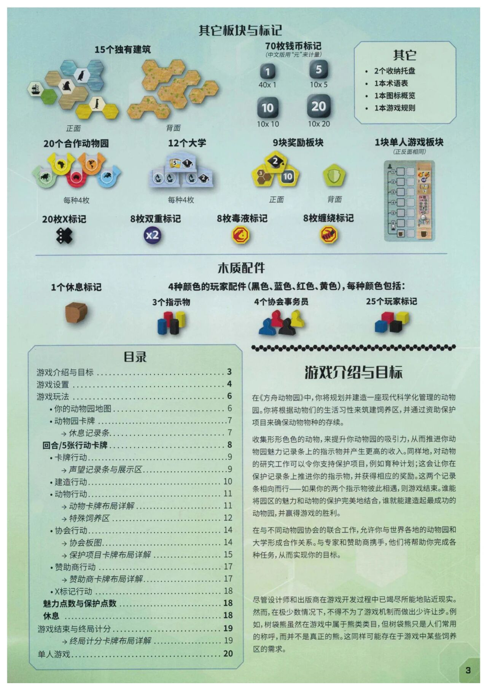
其它板块与标记
15个独有建筑
〔图 两组六边形板块。正面为印有动物剪影（企鹅、猩猩、猫鼬等）的六边形，搭配水、木、绿地与运输船图标板块；背面为橙色沙地块〕
正面 背面
70枚钱币标记
（中文版用"元"来计量）
〔图 灰色圆角方形代币，面值分别为 1、5、10、20〕
- 40x 1
- 10x 5
- 10x 10
- 10x 20
其它
- 2个收纳托盘
- 1本术语表
- 1本图标概览
- 1本游戏规则
20个合作动物园
（每种4枚）
〔图 绿色、黄色、红色、橙色、蓝色五种大陆形状板块，各印有对应大陆剪影〕
12个大学
（每种4枚）
〔图 浅蓝色建筑形板块，印有显微镜、学位帽图标及数字 1、2、5〕
9块奖励板块
〔图 正面为黄色五边形板块，印有显微镜（3）、学位帽（2）、保护点（10）等图标；背面为素面绿色盾形板块〕
正面 背面
1块单人游戏板块
（正反面相同）
〔图 竖长条形板块，左半为带数字 1–6 的方格与虚线格轨道，右半为彩色图标栏〕
20枚X标记
〔图 黑色 X 形标记〕
8枚双重标记
〔图 紫色圆形标记，印有"x2"〕
8枚毒液标记
〔图 黄色八角形标记，印有红色毒牙图案〕
8枚缠绕标记
〔图 黄色八角形标记，印有红色蟒蛇缠绕图案〕
木质配件
1个休息标记
〔图 棕色木质方块〕
4种颜色的玩家配件（黑色、蓝色、红色、黄色），每种颜色包括：
- 3个指示物
〔图 彩色立柱形木粒〕
- 4个协会事务员
〔图 人形木质棋子〕
- 25个玩家标记
〔图 彩色小方块〕
〔图 页面分隔装饰，一排黑色小六边形〕
目录
游戏介绍与目标 …… 3
游戏设置 …… 4
游戏玩法 …… 6
- 你的动物园地图 …… 6
- 动物园卡牌 …… 7
- → 休息记录条 …… 7
回合/5张行动卡牌 …… 8
- 卡牌行动 …… 9
- → 声望记录条与展示区 …… 9
- 建造行动 …… 10
- 动物行动 …… 11
- → 动物卡牌布局详解 …… 11
- → 特殊饲养区 …… 12
- 协会行动 …… 14
- → 协会板图 …… 14
- → 保护项目卡牌布局详解 …… 15
- 赞助商行动 …… 17
- → 赞助商卡牌布局详解 …… 17
- X标记行动 …… 18
魅力点数与保护点数 …… 18
休息 …… 18
游戏结束与终局计分 …… 19
- → 终局计分卡牌布局详解 …… 19
单人游戏 …… 20
游戏介绍与目标
在《方舟动物园》中，你将规划并建造一座现代科学化管理的动物园。你将根据动物们的生活习性来筑建饲养区，并通过资助保护项目来确保动物物种的存续。
收集形形色色的动物，来提升你动物园的吸引力，从而推进你动物园魅力记录条上的指示物并产生更高的收入。同样地，对动物的研究工作可以令你支持保护项目，例如育种计划；这会让你在保护记录条上推进你的指示物，并获得相应的奖励。这两个记录条相向而行——如果你的两个指示物彼此相遇，则游戏结束。谁能将园区的魅力和动物的保护完美地结合，谁就能建造起最成功的动物园，并赢得游戏的胜利。
在与不同动物园协会的联合工作，允许你与世界各地的动物园和大学形成合作关系。与专家和赞助商携手，他们将帮助你完成各种任务，从而实现你的目标。〔原文如此：此句"在与……的联合工作"作主语，句式不通〕
尽管设计师和出版商在游戏开发过程中已竭尽所能地贴近现实。然而，在极少数情况下，不得不为了游戏机制而做出少许让步。例如，树袋熊虽然在游戏中属于熊类类目，但树袋熊只是人们常用的称呼，而并不是真正的熊。这同样可能存在于游戏中某些饲养区的需求。〔原文如此："尽管……。"以句号结尾，与下句"然而"不衔接〕
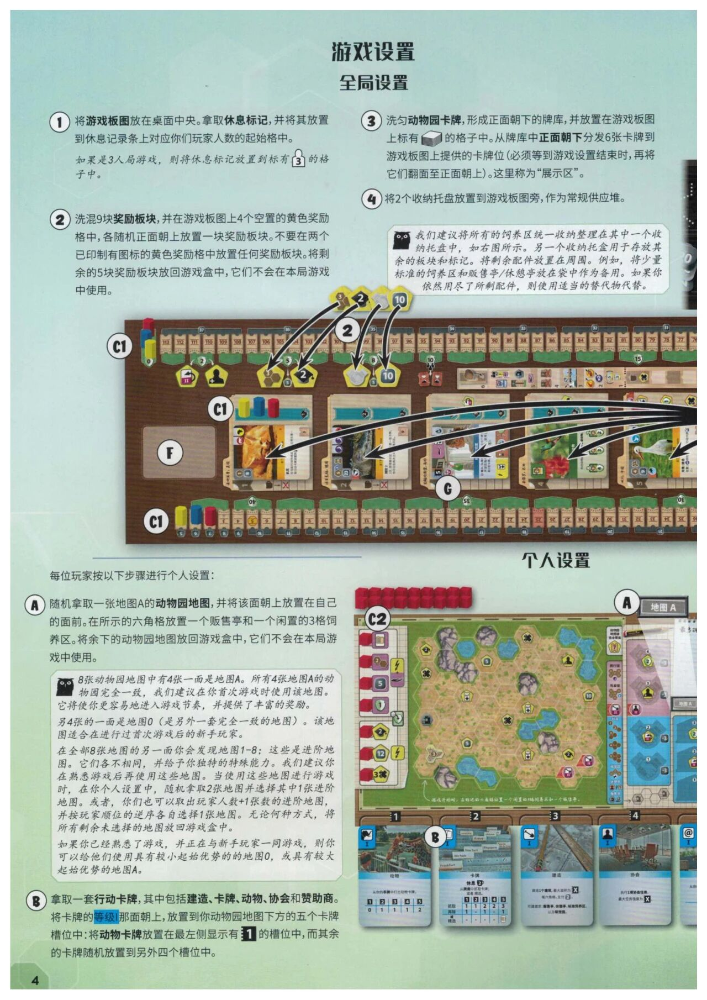
游戏设置
全局设置
1 将游戏板图放在桌面中央。拿取休息标记，并将其放置到休息记录条上对应你们玩家人数的起始格中。
如果是3人局游戏，则将休息标记放置到标有〔图 人形图标，下标数字3〕的格子中。
2 洗混9块奖励板块，并在游戏板图上4个空置的黄色奖励格中，各随机正面朝上放置一块奖励板块。不要在两个已印制有图标的黄色奖励格中放置任何奖励板块。将剩余的5块奖励板块放回游戏盒中，它们不会在本局游戏中使用。
3 洗匀动物园卡牌，形成正面朝下的牌库，并放置在游戏板图上标有〔图 牌堆图标〕的格子中。从牌库中正面朝下分发6张卡牌到游戏板图上提供的卡牌位（必须等到游戏设置结束时，再将它们翻面至正面朝上）。这里称为"展示区"。
4 将2个收纳托盘放置到游戏板图旁，作为常规供应堆。
〔图 黑框注（左侧为黑色猫头鹰图标）：〕我们建议将所有的饲养区统一收纳整理在其中一个收纳托盘中，如右图所示。另一个收纳托盒〔原文如此：组件表与前文均作"收纳托盘"〕用于存放其余的板块和标记。将剩余配件放置在周围。例如，将少量标准的饲养区和贩售亭/休憩亭放在袋中作为备用。如果你依然用尽了所剩配件，则使用适当的替代物代替。
〔图 游戏板图全景照片。标注 C1（三处，指向供应堆区域）、F（左侧卡牌位）、2（黄色奖励板块图标 3、2、10，箭头指向板图上的黄色奖励格）、G（展示区卡牌）。黑色箭头从步骤 2、3 的图示分别指向奖励格与展示区的各张卡牌〕
个人设置
每位玩家按以下步骤进行个人设置：
A 随机拿取一张地图A的动物园地图，并将该面朝上放置在自己的面前。在所示的六角格放置一个贩售亭和一个闲置的3格饲养区。将余下的动物园地图放回游戏盒中，它们不会在本局游戏中使用。
〔图 黑框注（左侧为黑色猫头鹰图标）：〕8张动物园地图中有4张一面是地图A。所有4张地图A的动物园完全一致，我们建议在你首次游戏时使用该地图。它将使你更容易地进入游戏节奏，并提供了丰富的奖励。〔原文如此："并提供了"时态生硬〕
另4张的一面是地图0（是另外一套完全一致的地图）。该地图适合在进行过首次游戏后的新手玩家。〔原文如此：句式杂糅〕
在全部8张地图的另一面你会发现地图1-8；这些是进阶地图。它们各不相同，并给予你独特的特殊能力。我们建议你在熟悉游戏后再使用这些地图。当使用这些地图进行游戏时，在你个人设置中，随机拿取2张地图并选择其中1张进阶地图。或者，你们也可以取出玩家人数+1张数的进阶地图，并按玩家顺位的逆序各自选择1张地图。无论何种方式，将所有剩余未选择的地图放回游戏盒中。
如果你已经熟悉了游戏，并正在与新手玩家一同游戏，则你可以给他们使用具有较小起始优势的的地图0，或具有较大起始优势的地图A。〔原文如此："优势的的"为叠字〕
B 拿取一套行动卡牌，其中包括建造、卡牌、动物、协会和赞助商。将卡牌的〔等级1〕（蓝底高亮）那面朝上，放置到你动物园地图下方的五个卡牌槽位中：将动物卡牌放置在最左侧显示有〔图 黑底数字1〕的槽位中，而其余的卡牌随机放置到另外四个槽位中。
〔图 个人设置全景照片。左上为一排红色木质配件，标注 C2（指向玩家板图左侧竖栏）；标注 A 与"地图 A"标签（指向动物园地图）；动物园地图下缘有手写体白色小注，依稀为"游戏开始时，在指定的六角格放置一个闲置的3格饲养区和一个贩售亭。"〔?，字迹模糊无法完全辨认〕；地图下方为五个行动卡牌槽位，槽位标号 1–5，卡牌名称分别为动物、卡牌、建造、协会、赞助商（第五张部分可见），标注 B（指向槽位区）〕
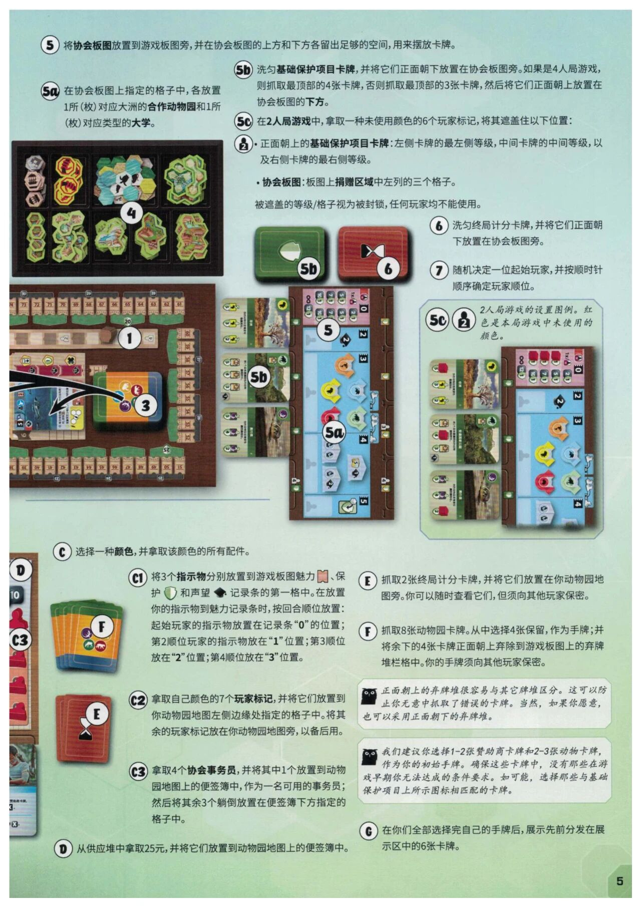
（本页为游戏设置步骤的续页，无大节标题；左页边缘露出对页局部的步骤字母标记〔D〕〔C3〕〔F〕〔E〕及照片边缘，因被裁切无法完整辨认。）
步骤 5～7（协会板图与起始玩家）
5 将协会板图放置到游戏板图旁，并在协会板图的上方和下方各留出足够的空间，用来摆放卡牌。
5a 在协会板图上指定的格子中，各放置1所（枚）对应大洲的合作动物园和1所（枚）对应类型的大学。
〔图 协会板图照片，板上摆放各色六角形动物图块与玩家标记，其中一个玩家标记旁标注数字4〕
5b 洗匀基础保护项目卡牌，并将它们正面朝下放置在协会板图旁。如果是4人局游戏，则抓取最顶部的4张卡牌，否则抓取最顶部的3张卡牌，然后将它们正面朝上放置在协会板图的下方。
5c 在2人局游戏中，拿取一种未使用颜色的6个玩家标记，将其遮盖住以下位置：
〔2人局图标〕·正面朝上的基础保护项目卡牌：左侧卡牌的最左侧等级，中间卡牌的中间等级，以及右侧卡牌的最右侧等级。
·协会板图：板图上捐赠区域中左列的三个格子。
被遮盖的等级/格子视为被封锁，任何玩家均不能使用。
〔图 绿色板图配件照片，标注5b〕〔图 红色沙漏图案板图配件照片，标注6〕
6 洗匀终局计分卡牌，并将它们正面朝下放置在协会板图旁。
7 随机决定一位起始玩家，并按顺时针顺序确定玩家顺位。
〔边框示例框〕5c〔2人局图标〕 2人局游戏的设置图例。红色是本局游戏中未使用的颜色。
〔图 2人局设置照片，基础保护项目卡牌与协会板图上以红色玩家标记遮盖指定等级/格子〕
〔图 游戏板图照片局部，可见板图边缘数字1、起始玩家标记3及箭头〕
步骤 C～D（个人配件）
C 选择一种颜色，并拿取该颜色的所有配件。
C1 将3个指示物分别放置到游戏板图魅力〔粉色图标〕、保护〔绿色盾牌图标〕和声望〔黑色学士帽图标〕记录条的第一格中。在放置你的指示物到魅力记录条时，按回合顺位放置：起始玩家的指示物放置在记录条“0”的位置；第2顺位玩家的指示物放在“1”位置；第3顺位放在“2”位置；第4顺位放在“3”位置。
C2 拿取自己颜色的7个玩家标记，并将它们放置到你动物园地图左侧边缘处指定的格子中。将其余的玩家标记放在你动物园地图旁，以备后用。
C3 拿取4个协会事务员，并将其中1个放置到动物园地图上的便签簿中，作为一名可用的事务员；然后将其余3个躺倒放置在便签簿下方指定的格子中。
D 从供应堆中拿取25元，并将它们放置到动物园地图上的便签簿中。
〔图 一叠卡牌照片，标注F〕〔图 红色背面卡牌照片，标注E〕
步骤 E～G（卡牌）
E 抓取2张终局计分卡牌，并将它们放置在你动物园地图旁。你可以随时查看它们，但须向其他玩家保密。
F 抓取8张动物园卡牌。从中选择4张保留，作为手牌；并将其余下的4张卡牌正面朝上弃除到游戏板图上的弃牌堆栏格中。你的手牌须向其他玩家保密。
〔提示框〕正面朝上的弃牌堆很容易与其它牌堆区分。这可以防止你无意中抓取了错误的卡牌。当然，如果你愿意，也可以采用正面朝下的弃牌堆。
〔提示框〕我们建议你选择1-2张赞助商卡牌和2-3张动物卡牌，作为你的初始手牌。确保这些卡牌中，没有那些在游戏早期你无法达成的条件要求。如可能，选择那些与基础保护项目上所示图标相匹配的卡牌。
G 在你们全部选择完自己的手牌后，展示先前分发在展示区中的6张卡牌。
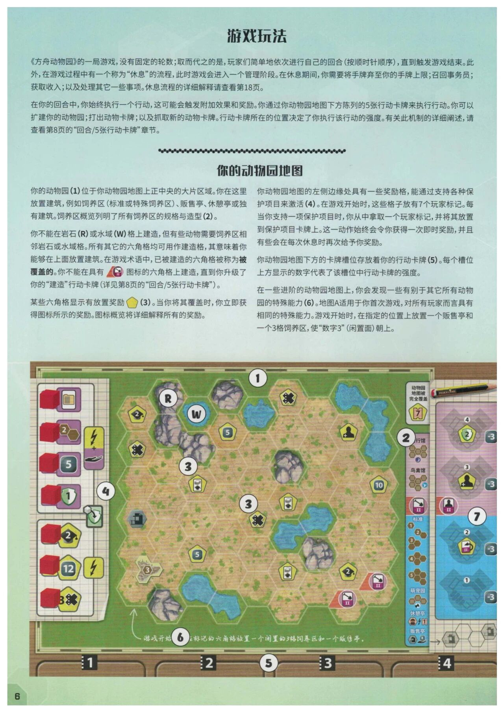
游戏玩法
《方舟动物园》的一局游戏，没有固定的轮数；取而代之的是，玩家们简单地依次进行自己的回合（按顺时针顺序），直到触发游戏结束。此外，在游戏过程中有一个称为“休息”的流程，此时游戏会进入一个管理阶段。在休息期间，你需要将手牌弃至你的手牌上限；召回事务员；获取收入；以及处理其它一些事项。休息流程的详细解释请查看第18页。
在你的回合中，你始终执行一个行动，这可能会触发附加效果和奖励。你通过你动物园地图下方陈列的5张行动卡牌来执行行动。你可以扩建你的动物园；打出动物卡牌；以及抓取新的动物卡牌。行动卡牌所在的位置决定了你执行该行动的强度。有关此机制的详细阐述，请查看第8页的“回合/5张行动卡牌”章节。
〔装饰分隔线：一排菱形点〕
你的动物园地图
你的动物园（1）位于你动物园地图上正中央的大片区域。你在这里放置建筑，例如饲养区（标准或特殊饲养区）、贩售亭、休憩亭或独有建筑。饲养区概览列明了所有饲养区的规格与造型（2）。
你不能在岩石（R）或水域（W）格上建造，但有些动物需要饲养区相邻岩石或水域格。所有其它的六角格均可用作建造格，其意味着你能够在上面放置建筑。在游戏术语中，已被建造的六角格被称为被覆盖的。你不能在具有〔红白色覆盖图标〕图标的六角格上建造，直到你升级了你的“建造”行动卡牌（详见第8页的“回合/5张行动卡牌”）。
某些六角格显示有放置奖励〔黄色五边形图标〕（3）。当你将其覆盖时，你立即获得图标所示的奖励。图标概览将详细解释所有的奖励。
你动物园地图的左侧边缘处具有一些奖励格，能通过支持各种保护项目来激活（4）。在游戏开始时，这些格子放有7个玩家标记。每当你支持一项保护项目时，你从中拿取一个玩家标记，并将其放置到保护项目卡牌上。这一动作始终会令你获得一次即时奖励，并且有些会在每次休息时再次给予你奖励。
你动物园地图下方的卡牌槽位存放着你的行动卡牌（5）。每个槽位上方显示的数字代表了该槽位中行动卡牌的强度。
在一些进阶的动物园地图上，你会发现一些有别于其它所有动物园的特殊能力（6）。地图A适用于你首次游戏，对所有玩家而言具有相同的特殊能力。游戏开始时，在指定的位置上放置一个贩售亭和一个3格饲养区，使“数字3”（闲置面）朝上。
〔图 动物园地图板图照片，绿色版面，带编号标注1～6：左侧为奖励格与玩家标记、右缘为保护项目/图标区、下方为行动卡牌槽位；图上角有“动物园地图概览-完全覆盖”字样标签；图内白色手写体图注：“游戏开始〔“6”标注气泡遮盖约1～2字〕在标记的六角格放置一个闲置的3格饲养区和一个贩售亭。”；板图底边有胶片齿孔样式的数字1、2、5、3、4标记〕
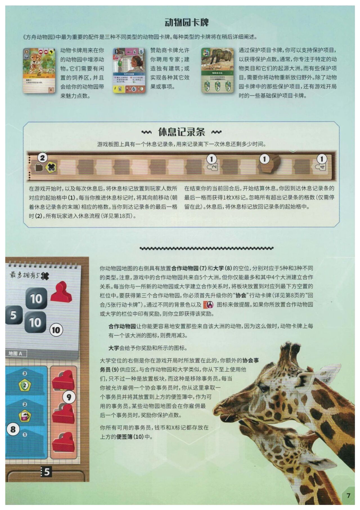
动物园卡牌
《方舟动物园》中最为重要的配件是三种不同类型的动物园卡牌。每种类型的卡牌将在稍后详细阐述。
〔图 三张示例卡牌照片——动物卡牌"猎豹"（猎豹照片）、赞助商卡牌"科学实验室"、保护项目卡牌"物种多样化"（大象照片）〕
动物卡牌用来在你的动物园中增添动物。它们需要有闲置的饲养区，并且会给你的动物园带来魅力点数。
赞助商卡牌允许你聘用专家；建造独有建筑；或实现各种其它效果或事项。
通过保护项目卡牌，你可以支持保护项目，以获得保护点数。通常，你专注于特定的动物类目和它们的起源大洲。而有些保护项目，需要你将动物重新放归野外。除了动物园卡牌中的那些保护项目，还有游戏开局时的一些基础保护项目卡牌。
休息记录条
游戏板图上具有一个休息记录条，用来记录离下一次休息还剩多少时间。
〔图 休息记录条照片——木条分为许多格，最左格印有钱袋与X标记图标，上方标注圆圈数字"2"；右侧有三个标注"1"的位置：印有数字"2"图标的格、放着一枚X标记木块的格、印有数字"4"图标的末格〕
在游戏开始时，以及每次休息后，将休息标记放置到玩家人数所对应的起始格中 (1）。每当你推进休息标记时，将其向前移动 (朝着休息记录条的末端) 相应的格数。当你到达记录条的最后一格时 (2），所有玩家进入休息流程 (详见第18页）。
在结束你的当前回合后，开始结算休息。你因到达休息记录条的最后一格而获得1枚X标记。忽略所有超出记录条的格数 (仅需停留在此）。休息后，将休息标记放回记录条的起始格中。
〔图 右页缘装饰照片——两只长颈鹿〕
合作动物园、大学与协会事务员
〔此节在原书中无印制小节标题，为接续上文的正文〕
〔图 左侧玩家地图右侧栏照片——便签簿上印有"最多拥有5"，放有面额10、5、10、10的钱币和红色事务员板块，旁为带图标的栏位，图上印有圆圈标注数字，左下角标"地图 A"〕
你动物园地图的右侧具有放置合作动物园 (7) 和大学 (8) 的空位，分别对应于5种和3种不同的类型。注意，游戏中的合作动物园共来自5个大洲，但你仅能最多和其中4个大洲建立合作关系。每当你与一所新的动物园或大学建立合作关系时，将板块放置到对应列最下方空置的栏位中。要获得第三个合作动物园，你必须首先升级你的"协会"行动卡牌 (详见第8页的"回合/5张行动卡牌"）。通过不同的背景色以及〔紫色"II"升级图标〕图标来做提醒。如果你所放置合作动物园或大学的栏位中印有奖励，则你立即获得该奖励。
合作动物园让你能更容易地安置那些来自该大洲的动物，因为这么做时，动物卡牌上每有一个该大洲的图标，则费用减3。
大学会给予你奖励和所示的图标。
大学空位的右侧是你在游戏开局时所放置在此的，你额外的协会事务员 (9) 供应区。与合作动物园和大学类似，你从下至上使用他们，只不过一种是放置板块，而这种是移除事务员。每当你被允许雇佣一个协会事务员时，你从这里拿取一个事务员并将其放置到上方的便签簿中，作为可用的事务员。某些动物园地图会在你雇佣最后一个事务员时，奖励你保护点数。
你所有可用的事务员，钱币和X标记都存放在上方的便签簿 (10) 中。
〔页码：7〕
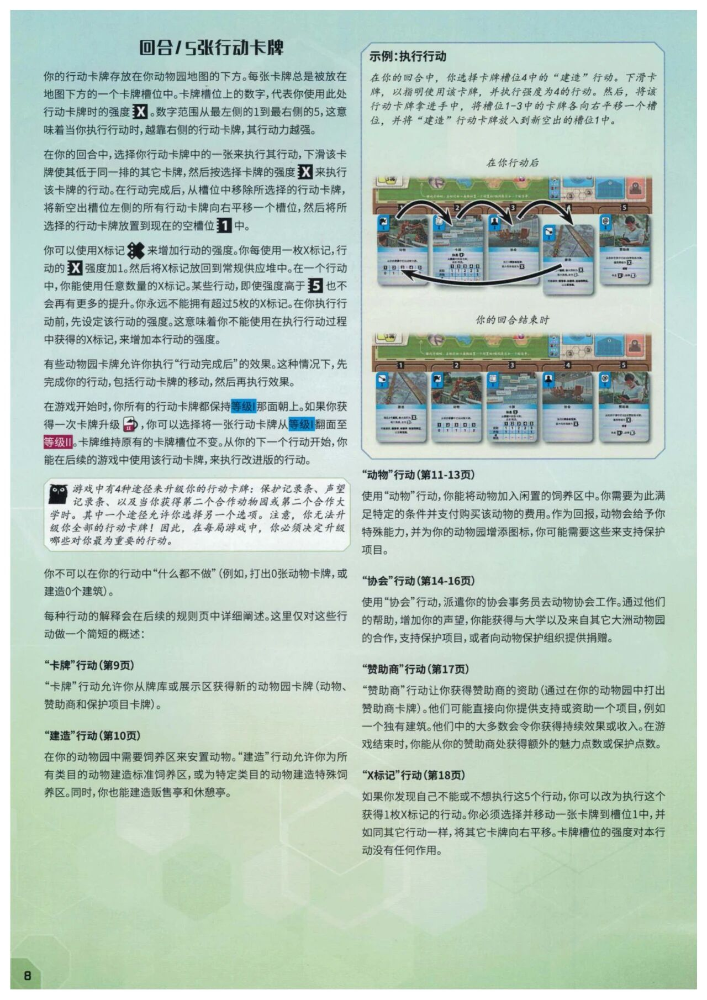
回合/5张行动卡牌
你的行动卡牌存放在你动物园地图的下方。每张卡牌总是被放在地图下方的一个卡牌槽位中。卡牌槽位上的数字，代表你使用此处行动卡牌时的强度〔强度图标：黑底白"X"〕。数字范围从最左侧的1到最右侧的5，这意味着当你执行行动时，越靠右侧的行动卡牌，其行动力越强。
在你的回合中，选择你行动卡牌中的一张来执行其行动，下滑该卡牌使其低于同一排的其它卡牌，然后按选择卡牌的强度〔强度图标〕来执行该卡牌的行动。在行动完成后，从槽位中移除所选择的行动卡牌，将新空出槽位左侧的所有行动卡牌向右平移一个槽位，然后将所选择的行动卡牌放置到现在的空槽位〔黑底数字"1"〕中。
你可以使用X标记〔X标记图标：黑色四叶形〕来增加行动的强度。你每使用一枚X标记，行动的〔强度图标〕强度加1。然后将X标记放回到常规供应堆中。在一个行动中，你能使用任意数量的X标记。某些行动，即使强度高于〔黑底数字"5"〕也不会有更多的提升。你永远不能拥有超过5枚的X标记。在你执行行动前，先设定该行动的强度。这意味着你不能使用在执行行动过程中获得的X标记，来增加本行动的强度。
有些动物园卡牌允许你执行"行动完成后"的效果。这种情况下，先完成你的行动，包括行动卡牌的移动，然后再执行效果。
在游戏开始时，你所有的行动卡牌都保持〔蓝底"等级I"〕那面朝上。如果你获得一次卡牌升级〔卡牌升级图标：带"II"的小卡与弧形箭头〕，你可以选择将一张行动卡牌从〔蓝底"等级I"〕翻面至〔紫红底"等级II"〕。卡牌维持原有的卡牌槽位不变。从你的下一个行动开始，你能在后续的游戏中使用该行动卡牌，来执行改进版的行动。
〔边栏注记（猫头鹰图标）〕游戏中有4种途径来升级你的行动卡牌：保护记录条、声望记录条、以及当你获得第二个合作动物园或第二个合作大学时。其中一个途径允许你选择另一个选项。注意，你无法升级你全部的行动卡牌！因此，在每局游戏中，你必须决定升级哪些对你最为重要的行动。
你不可以在你的行动中"什么都不做" (例如，打出0张动物卡牌，或建造0个建筑）。
每种行动的解释会在后续的规则页中详细阐述。这里仅对这些行动做一个简短的概述：
"卡牌"行动 (第9页)
"卡牌"行动允许你从牌库或展示区获得新的动物园卡牌 (动物、赞助商和保护项目卡牌）。
"建造"行动 (第10页)
在你的动物园中需要饲养区来安置动物。"建造"行动允许你为所有类目的动物建造标准饲养区，或为特定类目的动物建造特殊饲养区。同时，你也能建造贩售亭和休憩亭。
示例： 执行行动
在你的回合中，你选择卡牌槽位4中的"建造"行动。下滑卡牌，以指明使用该卡牌，并执行强度为4的行动。然后，将该行动卡牌拿进手中，将槽位1-3中的卡牌各向右平移一个槽位，并将"建造"行动卡牌放入到新空出的槽位1中。
〔图 标题"在你行动后"的槽位照片——5个卡牌槽位标有编号1-5，箭头表示所选"建造"卡移除后，槽位1-3的卡牌各向右平移〕
〔图 标题"你的回合结束时"的槽位照片——5张行动卡牌重新排满槽位1-5〕
"动物"行动 (第11-13页)
使用"动物"行动，你能将动物加入闲置的饲养区中。你需要为此满足特定的条件并支付购买该动物的费用。作为回报，动物会给予你特殊能力，并为你的动物园增添图标，你可能需要这些来支持保护项目。
"协会"行动 (第14-16页)
使用"协会"行动，派遣你的协会事务员去动物协会工作。通过他们的帮助，增加你的声望，你能获得与大学以及来自其它大洲动物园的合作，支持保护项目，或者向动物保护组织提供捐赠。
"赞助商"行动 (第17页)
"赞助商"行动让你获得赞助商的资助 (通过在你的动物园中打出赞助商卡牌）。他们可能直接向你提供支持或资助一个项目，例如一个独有建筑。他们中的大多数会令你获得持续效果或收入。在游戏结束时，你能从你的赞助商处获得额外的魅力点数或保护点数。
"X标记"行动 (第18页)
如果你发现自己不能或不想执行这5个行动，你可以改为执行这个获得1枚X标记的行动。你必须选择并移动一张卡牌到槽位1中，并如同其它行动一样，将其它卡牌向右平移。卡牌槽位的强度对本行动没有任何作用。
〔页码：8〕
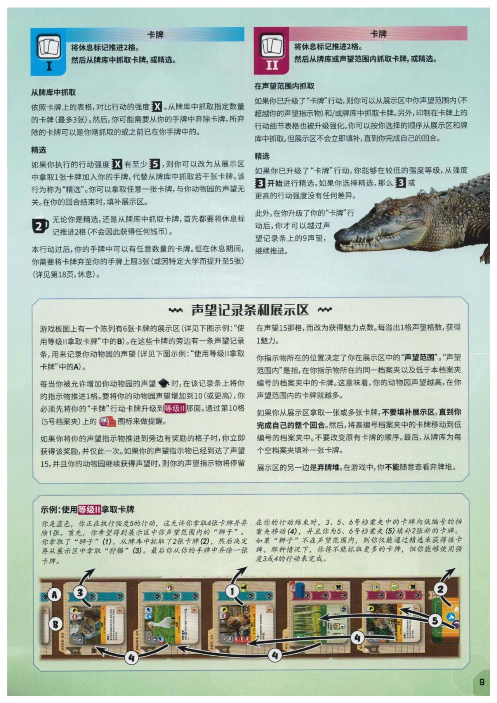
行动卡牌等级 I：卡牌
卡牌
将休息标记推进2格。
然后从牌库中抓取卡牌，或精选。
从牌库中抓取
依照卡牌上的表格，对比行动的强度〔X〕。从牌库中抓取指定数量的卡牌（最多3张）。然后，你可能需要从你的手牌中弃除卡牌，所弃除的卡牌可以是你刚抓取的或之前已在你手牌中的。
精选
如果你执行的行动强度〔X〕有至少〔5〕，则你可以改为从展示区中拿取1张卡牌加入你的手牌，代替从牌库中抓取若干张卡牌。该行为称为"精选"。你可以拿取任意一张卡牌，与你动物园的声望无关。在你的回合结束时，填补展示区。
〔咖啡杯图标，内有数字2〕无论你是精选，还是从牌库中抓取卡牌，首先都要将休息标记推进2格（不会因此获得任何钱币）。
本行动过后，你的手牌中可以有任意数量的卡牌。但在休息期间，你需要将卡牌弃至你的手牌上限3张（或因特定大学而提升至5张)(详见第18页，休息）。
行动卡牌等级 II：卡牌
卡牌
将休息标记推进2格。
然后从牌库或声望范围内抓取卡牌，或精选。
在声望范围内抓取
如果你已升级了"卡牌"行动，则你可以从展示区中你声望范围内（不超越你的声望指示物）和/或牌库中抓取卡牌。另外，印制在卡牌上的行动细节表格也被升级强化。你可以按你选择的顺序从展示区和牌库中抓取，但展示区不会立即填补，直到你完成自己的回合。
精选
如果你已升级了"卡牌"行动，你能够在较低的强度等级，从强度〔3〕开始进行精选。如果你选择精选，那么〔3〕或更高的行动强度没有任何差异。
此外，在你升级了你的"卡牌"行动后，你才可以越过声望记录条上的9声望，继续推进。
〔图 鳄鱼头部特写照片，位于右栏文字旁〕
声望记录条和展示区
游戏板图上有一个陈列有6张卡牌的展示区（详见下图示例："使用等级II拿取卡牌"中的B）。在这些卡牌的旁边有一条声望记录条，用来记录你动物园的声望（详见下图示例："使用等级II拿取卡牌"中的A）。
每当你被允许增加你动物园的声望〔黑色帽状图标〕时，在该记录条上将你的指示物推进1格。要将你的动物园声望增加到10(或更高），你必须先将你的"卡牌"行动卡牌升级到等级II那面。通过第10格（5号档案夹）上的〔红色档案夹图标〕图标来做提醒。
如果你将你的声望指示物推进到旁边有奖励的格子时，你立即获得该奖励，并仅此一次。如果你的声望指示物已经到达了声望15，并且你的动物园继续获得声望时，则你的声望指示物将停留在声望15那格，而改为获得魅力点数。每溢出1格声望格数，获得1魅力。
你指示物所在的位置决定了你在展示区中的"声望范围"。"声望范围内"是指，在你指示物所在的同一档案夹以及低于本档案夹编号的档案夹中的卡牌。这意味着，你的动物园声望越高，在你声望范围内的卡牌就越多。
如果你从展示区拿取一张或多张卡牌，不要填补展示区，直到你完成自己的整个回合。然后，将高编号档案夹中的卡牌移动到低编号的档案夹中。不要改变原有卡牌的顺序。最后，从牌库为每个空档案夹填补一张卡牌。
展示区的另一边是弃牌堆。在游戏中，你不能随意查看弃牌堆。
示例：使用等级II拿取卡牌
你是蓝色，你正在执行强度5的行动，这允许你拿取4张卡牌并弃除1张。首先，你希望得到展示区中你声望范围内的"狮子"。你拿取了"狮子"(1），从牌库中抓取了2张卡牌（2），然后决定再从展示区中拿取"狩猫"(3）。最后你从你的手牌中弃除一张卡牌。
在你的行动结束时，3、5、6号档案夹中的卡牌向低编号的档案夹移动（4），并且你为5、6号档案夹（5）填补2张新的卡牌。如果"狮子"不在声望范围内，则你仅能通过精选来获得该卡牌。那种情况下，你将不能抓取更多的卡牌，但你能够使用强度3或4的行动来完成。
〔图 示例照片——展示区中六张动物卡牌与声望记录条局部，左侧边有A、B档案夹标记，卡牌之间有编号（1)-(5）的黑色箭头，指示拿取、抓取、移动与填补顺序〕
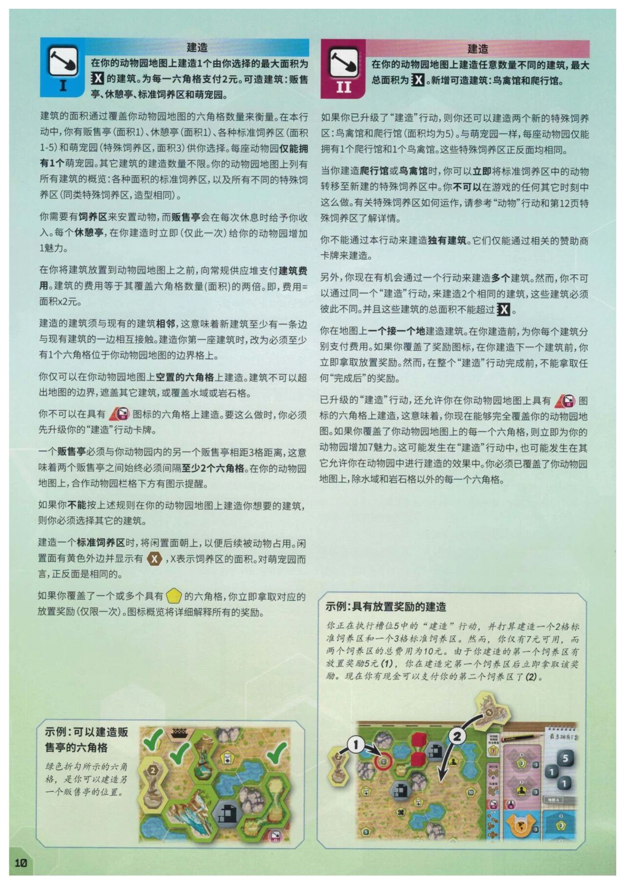
行动卡牌等级 I：建造
建造
在你的动物园地图上建造1个由你选择的最大面积为〔X〕的建筑。为每一六角格支付2元。可造建筑：贩售亭、休憩亭、标准饲养区和萌宠园。
建筑的面积通过覆盖你动物园地图的六角格数量来衡量。在本行动中，你有贩售亭（面积1）、休憩亭（面积1）、各种标准饲养区（面积1-5）和萌宠园（特殊饲养区，面积3）供你选择。每座动物园仅能拥有1个萌宠园。其它建筑的建造数量不限。你的动物园地图上列有所有建筑的概览：各种面积的标准饲养区，以及所有不同的特殊饲养区（同类特殊饲养区，造型相同）。
你需要有饲养区来安置动物，而贩售亭会在每次休息时给予你收入。每个休憩亭，在你建造时立即（仅此一次）给你的动物园增加1魅力。
在你将建筑放置到动物园地图上之前，向常规供应堆支付建筑费用。建筑的费用等于其覆盖六角格数量（面积）的两倍。即，费用=面积x2元。
建造的建筑须与现有的建筑相邻，这意味着新建筑至少有一条边与现有建筑的一边相互接触。建造你第一座建筑时，改为必须有1个六角格位于你动物园地图的边界格上。
你仅可以在你动物园地图上空置的六角格上建造。建筑不可以超出地图的边界，遮盖其它建筑，或覆盖水域或岩石格。
你不可以在具有〔铲子+II 图标〕图标的六角格上建造。要这么做时，你必须先升级你的"建造"行动卡牌。
一个贩售亭必须与你动物园内的另一个贩售亭相距3格距离，这意味着两个贩售亭之间始终必须间隔至少2个六角格。在你的动物园地图上，合作动物园栏格下方有图示提醒。
如果你不能按上述规则在你的动物园地图上建造你想要的建筑，则你必须选择其它的建筑。
建造一个标准饲养区时，将闲置面朝上，以便后续被动物占用。闲置面有黄色外边并显示有〔六角形X图标〕，X表示饲养区的面积。对萌宠园而言，正反面是相同的。
如果你覆盖了一个或多个具有〔黄色五边形图标〕的六角格，你立即拿取对应的放置奖励（仅限一次）。图标概览将详细解释所有的奖励。
示例：可以建造贩售亭的六角格
绿色折勾所示的六角格，是你可以建造另一个贩售亭的位置。
〔图 动物园地图局部照片，绿色高亮折线勾出可放置贩售亭的六角格并配有绿色对勾，图中可见一个已建造的贩售亭和一个标有2的黄色六角格〕
行动卡牌等级 II：建造
建造
在你的动物园地图上建造任意数量不同的建筑，最大总面积为〔X〕。新增可造建筑：鸟禽馆和爬行馆。
如果你已升级了"建造"行动，则你还可以建造两个新的特殊饲养区：鸟禽馆和爬行馆（面积均为5）。与萌宠园一样，每座动物园仅能拥有1个爬行馆和1个鸟禽馆。这些特殊饲养区正反面均相同。
当你建造爬行馆或鸟禽馆时，你可以立即将标准饲养区中的动物转移至新建的特殊饲养区中。你不可以在游戏的任何其它时刻中这么做。有关特殊饲养区如何运作，请参考"动物"行动和第12页特殊饲养区了解详情。
你不能通过本行动来建造独有建筑。它们仅能通过相关的赞助商卡牌来建造。
另外，你现在有机会通过一个行动来建造多个建筑。然而，你不可以通过同一个"建造"行动，来建造2个相同的建筑，这些建筑必须彼此不同。并且这些建筑的总面积不能超过〔X〕。
你在地图上一个接一个地建造建筑。在你建造前，为你每个建筑分别支付费用。如果你覆盖了奖励图标，在你建造下一个建筑前，你立即拿取放置奖励。然而，在整个"建造"行动完成前，不能拿取任何"完成后"的奖励。
已升级的"建造"行动，还允许你在你动物园地图上具有〔铲子+II 图标〕图标的六角格上建造，这意味着，你现在能够完全覆盖你的动物园地图。如果你覆盖了你动物园地图上的每一个六角格，则立即为你的动物园增加7魅力。这可能发生在"建造"行动中，也可能发生在其它允许你在动物园中进行建造的效果中。你必须已覆盖了你动物园地图上，除水域和岩石格以外的每一个六角格。
示例：具有放置奖励的建造
你正在执行槽位5中的"建造"行动，并打算建造一个2格标准饲养区和一个3格标准饲养区。然而，你仅有7元可用，而两个饲养区的总费用为10元。由于你建造的第一个饲养区有放置奖励5元（1），你在建造完第一个饲养区后立即拿取该奖励。现在你有现金可以支付你的第二个饲养区了（2）。
〔图 动物园地图与玩家行动区局部照片，地图上标有编号（1)(2）的箭头指示两个饲养区的建造顺序，旁边可见标有数字5、1的板块与行动卡牌槽位〕
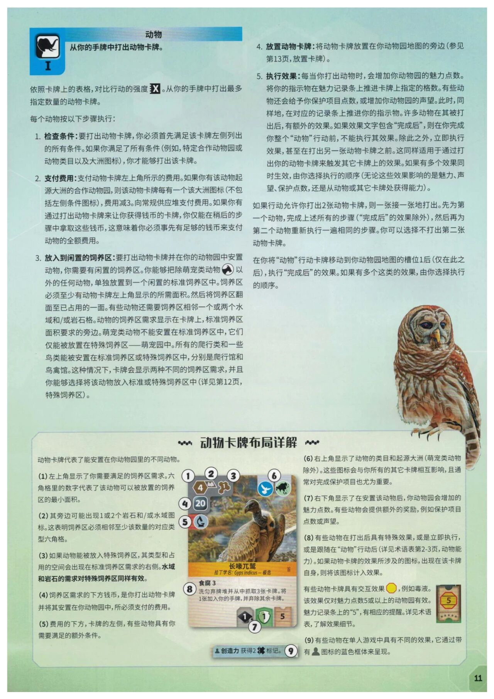
动物
（页首行动标题栏：蓝色条，标题居中为「动物」；左侧黑色方块图标为大象剪影，图标下方标有字母 I。）
从你的手牌中打出动物卡牌。
依照卡牌上的表格，对比行动的强度 X（黑底白字方块图标）。从你的手牌中打出最多指定数量的动物卡牌。
每个动物按以下步骤执行：
1. 检查条件：要打出动物卡牌，你必须首先满足该卡牌左侧列出的所有条件。如果你满足了所有条件（例如，特定合作动物园或动物类目以及大洲图标），你才能够打出该卡牌。
2. 支付费用：支付动物卡牌左上角所示的费用。如果你有该动物起源大洲的合作动物园，则该动物卡牌每有一个该大洲图标（不包括左侧条件图标），费用减 3。向常规供应堆支付费用。如果你有通过打出动物卡牌来让你获得钱币的卡牌，你仅能在稍后的步骤中拿取这些钱币，这意味着你必须事先有足够的钱币来支付动物的全额费用。
3. 放入到闲置的饲养区：要打出动物卡牌并在你的动物园中安置动物，你需要有闲置的饲养区。你能够把除萌宠类动物〔萌宠类动物图标：动物头剪影〕以外的任何动物，单独放置到一个闲置的标准饲养区中。饲养区必须至少有动物卡牌左上角显示的所需面积。然后将饲养区翻面至已占用的一面。有些动物还需要饲养区相邻一个或两个水域和/或岩石格。动物的饲养区需求显示在卡牌上，标准饲养区面积要求的旁边。萌宠类动物不能安置在标准饲养区中，它们仅能被放置在特殊饲养区——萌宠园中。所有的爬行类和一些鸟类能被安置在标准饲养区或特殊饲养区中，分别是爬行馆和鸟禽馆。这种情况下，卡牌会显示两种不同的饲养区需求，并且你能够选择将该动物放入标准或特殊饲养区中（详见第 12 页，特殊饲养区）。
4. 放置动物卡牌：将动物卡牌放置在你动物园地图的旁边（参见第 13 页，放置卡牌）。
5. 执行效果：每当你打出动物时，会增加你动物园的魅力点数。将你的指示物在魅力记录条上推进卡牌上指定的格数。有些动物还会给予你保护项目点数，或增加你动物园的声望。此时，同样地，在对应的记录条上推进你的指示物。许多动物在其被打出后，有额外的效果。如果效果文字包含"完成后"，则在你完成你整个"动物"行动前，不能执行其效果。除此之外，立即执行效果，甚至在打出另一张动物卡牌之前。这同样适用于通过打出你的动物卡牌来触发其它卡牌上的效果。如果有多个效果同时生效，由你选择执行的顺序（无论这些效果影响的是魅力、声望、保护点数，还是从动物或其它卡牌处获得能力）。
如果行动允许你打出 2 张动物卡牌，则一张接一张地打出。先为第一个动物，完成上述所有的步骤（"完成后"的效果除外），然后再为第二个动物重新执行一遍相同的步骤。你可以选择不打出第二张动物卡牌。
在你将"动物"行动卡牌移动到你动物园地图的槽位 1 后（仅在此之后），执行"完成后"的效果。如果有多个这类效果，由你选择执行的顺序。
〔图 右侧一只猫头鹰（横斑林鸮样式）站在树干上的插图〕
动物卡牌布局详解
动物卡牌代表了能安置在你动物园里的不同动物。
(1) 左上角显示了你需要满足的饲养区需求。六角格里的数字代表了该动物可以被放置的饲养区的最小面积。
(2) 其旁边可能出现 1 或 2 个岩石和/或水域图标。这表明饲养区必须相邻至少该数量的对应类型六角格。
(3) 如果动物能被放入特殊饲养区，其类型和占用的空间会出现在标准饲养区需求的右侧。水域和岩石的需求对特殊饲养区同样有效。
(4) 饲养区需求的下方钱币，是你打出动物卡牌并将其安置在你动物园中，所必须支付的费用。
(5) 费用的下方，卡牌的左侧，有些动物具有你需要满足的额外条件。
(6) 右上角显示了动物的类目和起源大洲（萌宠类动物除外）。这些图标会与你所有的其它卡牌相互影响，且通常对完成保护项目也尤为重要。
(7) 右下角显示了在安置该动物后，你动物园会增加的魅力点数。有些动物会提供额外的奖励，例如保护项目点数或声望。
(8) 有些动物在打出后具有特殊效果，或是立即执行，或是跟随在"动物"行动后（详见术语表第 2-3 页，动物能力）。如果动物卡牌的效果所涉及的图标，出现在该卡牌自身，则将该图标计入效果。
有些动物卡牌具有交互效果〔黄色八角形图标〕，例如毒液。该效果仅对魅力点数 5 或以上的动物园有效。魅力记录条上的"5"，有相应的提醒。详见术语表，了解效果细节。
〔图 一张卡牌式小图，黄色八角形框内数字 5，下方有虚线和五个圆点，背景绿色〕
(9) 有些动物在单人游戏中具有不同的效果，它通过带有人形图标的蓝色框体来呈现。
〔图 样例动物卡「长喙兀鹫」，编号圆标 1-9 标注卡牌各部位。卡面：左上角六角格数字 4、岩石图标、棕褐色特殊饲养区图形数字 1；其下黑色方块 20；左侧红色底、显微镜图标。右上角蓝色圆形鸟类图标、绿色圆形亚洲大洲图标。黄色名称条：「长喙兀鹫 / 拉丁学名： Gyps indicus — 极危」，条右端有一侧置的小符号〔?〕。效果栏：「食腐 3 / 洗匀弃牌堆并从中抓取 3 张卡牌。将 1 张加入你的手牌，并弃除其余卡牌。」底部图标：黑色菱形 1、绿色盾牌 1（编号 7 指向此处）、木牌 5。卡下方蓝色框条：「人形图标 创造力 获得 2〔黑色 X 形标记图标〕标记。」右侧编号 9 圆标。〕
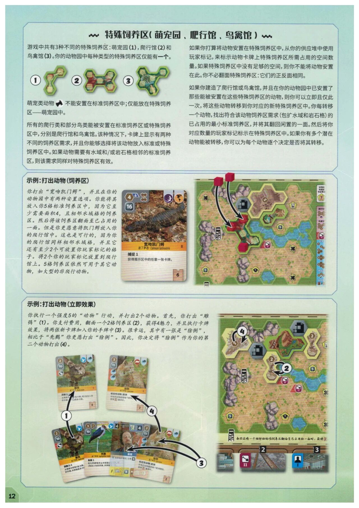
特殊饲养区（萌宠园、爬行馆、鸟禽馆）
（标题两侧有波浪形装饰符。）
游戏中共有 3 种不同的特殊饲养区：萌宠园（1），爬行馆（2）和鸟禽馆（3）。你的动物园中每种类型的特殊饲养区仅能有一个。
〔图 三块特殊饲养区拼图板块，分别标注编号 1（两格长条形）、2（六格哑铃形，内含红色图案）、3（多格块状，带网状顶棚图案）〕
萌宠类动物〔萌宠类动物图标：动物头剪影〕不能安置在标准饲养区中；仅能放在特殊饲养区——萌宠园中。
所有的爬行类和部分鸟类能被安置在标准饲养区或特殊饲养区中，分别是爬行馆和鸟禽馆。该种情况下，卡牌上显示有两种不同的饲养区需求，并且你能够选择将该动物放入标准或特殊饲养区中。如果动物需要有水域和/或岩石格相邻的标准饲养区，则该需求同样对特殊饲养区有效。
如果你打算将动物安置在特殊饲养区中，从你的供应堆中使用玩家标记，来标示动物卡牌上特殊饲养区所需占用的空间数量。如果特殊饲养区中没有足够的空间，则你不能将动物安置在此。你不必翻面特殊饲养区：它们的正反面相同。
如果你建造了爬行馆或鸟禽馆，并且在你的动物园中已安置了那些能被安置在这些特殊饲养区的动物，则你可以立即且仅此一次，将这些动物转移到你对应的新特殊饲养区中。你每转移一个动物，找出符合该动物饲养区需求（包扩〔原文如此〕水域和岩石格）的已占用的最小标准饲养区，并将其翻回闲置的一面。然后将你对应数量的玩家标记标示在特殊饲养区中。如果你有多个潜在动物能被转移，你可以为每个动物逐个决定是否将其转移。
示例：打出动物（饲养区）
你打出"宽吻凯门鳄"，并且在你的动物园中有两种安置选项。你能将其放入你 5 格标准饲养区中，因为它至少需要面积 4，且相邻水域格的饲养区〔原文如此〕。然后将该饲养区翻面至已占用的一面。但是你更愿意将凯门鳄放入你的爬行馆中。这也是可行的，因为你的爬行馆同样相邻水域格，并且它还有至少 2 个可放置你玩家标记的格子。将 2 个你的玩家标记放置到爬行馆上。5 格饲养区依然可用于其它动物，如大型的非爬行动物。
〔图 样例动物卡「宽吻凯门鳄」：左上角六角格数字 4、蓝色水域图标、棕褐色特殊饲养区图形数字 2；其下黑色方块 16；右上角紫色圆形爬行类图标、橙色圆形美洲大洲图标。黄色名称条：「宽吻凯门鳄 / 拉丁学名： Caiman latirostris」，条右端有一侧置小符号〔?〕。效果栏：「捕捉 1 / 获得展示区中的任意一张卡牌。」右下角木牌数字 6。〕
〔图 动物园地图局部，黑色箭头从上方的两个红色立方体玩家标记分别指向标准饲养区地块和爬行馆（深色建筑图标）所在地块，地图上有水域、岩石六角格、各建筑图标〕
示例：打出动物（立即效果）
你执行一个强度 5 的"动物"行动，并打出 2 个动物。首先，你打出"雕鸮"（1）。你支付费用，翻面一个 2 格饲养区（2），获得 4 魅力，并且执行卡牌效果，将两张新卡牌加入你的手牌中（3）。很幸运，其中有一张是"猞猁"，相比于"秃鹳"你更愿打出"猞猁"。因此，你决定将"猞猁"作为你的第二个动物打出（4）。
〔图 左下方为扇形摊开的多张手牌，黑色弧形箭头标注编号 1-4，其中两张卡牌分别标 1 和 4；右下方为动物园地图局部，含岩石格、水域格、建筑物图标及编号标记 2、3〕
〔图 地图下方横条图注，左侧瞭望塔图标，文字：「每次你将一个相邻的标准饲养区翻面至已占用的一面时，获得〔红框数字 2 图标〕〔?〕」；其下为行动卡牌行，黑色方块数字 2 与 3 之间及右侧放置卡牌，可见酒红色卡牌（铲子图标、罗马数字 II）和蓝色卡牌（人形图标、字母 I）〕
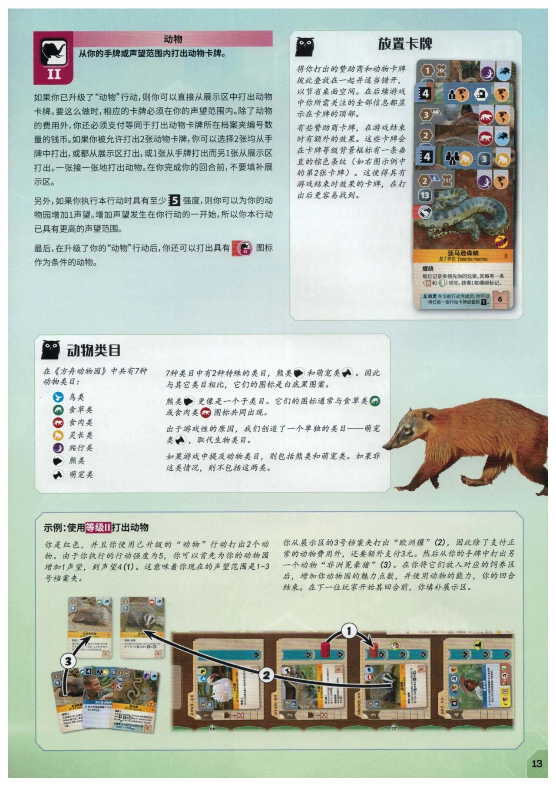
动物（行动卡牌，等级 II）
（图标：象头；等级 II）
动物
从你的手牌或声望范围内打出动物卡牌。
如果你已升级了“动物”行动，则你可以直接从展示区中打出动物卡牌。要这么做时，相应的卡牌必须在你的声望范围内。除了动物的费用外，你还必须支付等同于打出动物卡牌所在档案夹编号数量的钱币。如果你被允许打出2张动物卡牌，你可以选择2张均从手牌中打出，或都从展示区打出，或1张从手牌打出而另1张从展示区打出。一张接一张地打出动物。在你完成你的回合前，不要填补展示区。
另外，如果你执行本行动时具有至少 5 强度，则你可以为你的动物园增加1声望。增加声望发生在你行动的一开始，所以你本行动已具有更高的声望范围。
最后，在升级了你的“动物”行动后，你还可以打出具有（图标：红色方形，内有动物与“II”字样）图标作为条件的动物。
放置卡牌
（图标：猫头鹰剪影）
将你打出的赞助商和动物卡牌彼此叠放在一起并适当错开，以节省桌面空间。在后续游戏中你所需关注的全部信息都显示在卡牌的顶部。
有些赞助商卡牌，在游戏结束时有额外的效果。这些卡牌会在卡牌等级背景框标有一条垂直的棕色条纹（如右图示例中的第2张卡牌）。这使得具有游戏结束时效果的卡牌，在打出后更容易找到。
〔图 数张卡牌彼此错开叠放的照片，仅露出各卡顶部边缘，可见费用数字 1、0、4、3、2、4、2、1、13 等；第2张卡的等级背景框带垂直棕色条纹；最下方为一张完整露出的动物卡，卡名为“亚马逊森蚺”，其下印“拉丁学名：Eunectes murinus”，右侧有小字“危”。卡牌下部中文文字（规则要点）如下：〕
缠绕
每位记录条领先你的玩家，其每有一条（图标：粉色旗帜状图标 和 图标：盾牌）领先，获得1枚缠绕标记。
（图标：人形）机员 在当前行动完成后，你可以将任意一张行动卡牌放置到〔等级1〕。
（卡名栏右下方印有数字：6）
动物类目
在《方舟动物园》中共有7种动物类目：
- 鸟类（图标：蓝底白色鸟）
- 食草类（图标：绿底白色动物）
- 食肉类（图标：红底白色动物）
- 灵长类（图标：黄底白色猴）
- 爬行类（图标：紫底白色蜥蜴）
- 熊类（图标：白底黑色熊头）
- 萌宠类（图标：白底黑色动物头）
7种类目中有2种特殊的类目，熊类（图标）和萌宠类（图标）。因此与其它类目相比，它们的图标是白底黑图案。
熊类（图标）更像是一个子类目。它们的图标通常与食草类（图标）或食肉类（图标）图标共同出现。
出于游戏性的原因，我们创造了一个单独的类目——萌宠类（图标），取代生物类目。
如果游戏中提及动物类目，则包括熊类和萌宠类。如果非这类情况，则不包括这两类。
〔图 页面右侧一只南浣熊（长鼻、站姿）的实拍照片。〕
示例：使用等级II打出动物
（“等级II”为粉底高亮字）
你是红色，并且你使用已升级的“动物”行动打出2个动物。由于你执行的行动强度为5，你可以首先为你的动物园增加1声望，到声望4(1）。这意味着你现在的声望范围是1-3号档案夹。
你从展示区的3号档案夹打出“欧洲獾”（2），因此除了支付正常的动物费用外，还要额外支付3元。然后从你的手牌中打出另一个动物“非洲冕豪猪”（3）。在你将它们放入对应的饲养区后，增加你动物园的魅力，点数〔原文如此〕，并使用动物的能力，你的回合结束。在下一位玩家开始其回合前，你填补展示区。
〔图 示例配图。左侧两张动物卡（欧洲獾、非洲冕豪猪）与左侧档案夹的特写，标有带圈数字③；右侧为动物园地图长条照片，可见多个饲养区、已放好的动物卡、行动条，图中标有带圈数字①②及红色圆柱指示物、黑色箭头指示行动顺序。〕
（页面右下角页码：13）
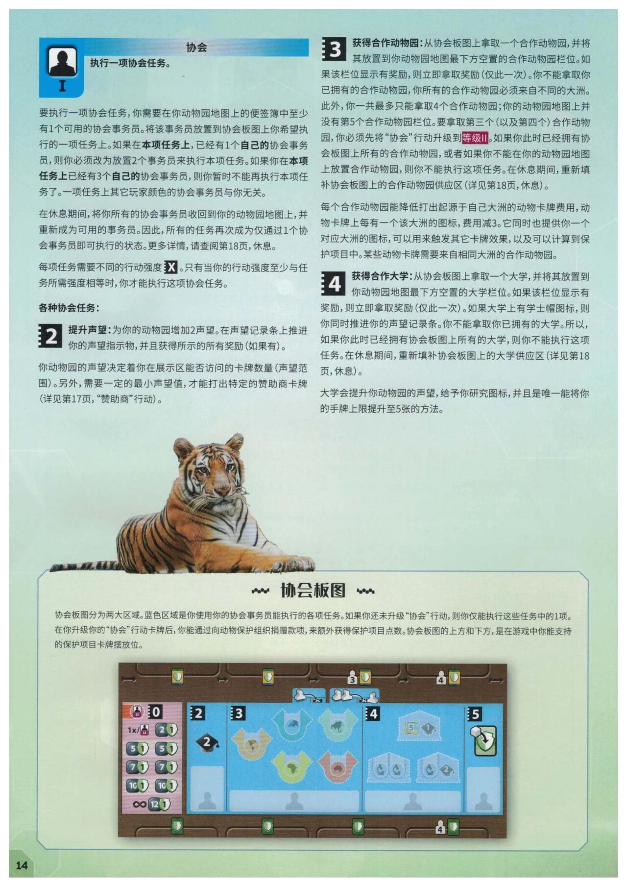
协会（行动卡牌，等级 I）
（图标：人像剪影；等级 I）
协会
执行一项协会任务。
要执行一项协会任务，你需要在你动物园地图上的便签簿中至少有1个可用的协会事务员。将该事务员放置到协会板图上你希望执行的一项任务上。如果在本项任务上，已经有1个自己的协会事务员，则你必须改为放置2个事务员来执行本项任务。如果你在本项任务上已经有3个自己的协会事务员，则你暂时不能再执行本项任务了。一项任务上其它玩家颜色的协会事务员与你无关。
在休息期间，将你所有的协会事务员收回到你的动物园地图上，并重新成为可用的事务员。因此，所有的任务再次成为仅通过1个协会事务员即可执行的状态。更多详情，请查阅第18页，休息。
每项任务需要不同的行动强度 X。只有当你的行动强度至少与任务所需强度相等时，你才能执行这项协会任务。
各种协会任务：
2 提升声望：为你的动物园增加2声望。在声望记录条上推进你的声望指示物，并且获得所示的所有奖励（如果有）。
你动物园的声望决定着你在展示区能否访问的卡牌数量（声望范围）。另外，需要一定的最小声望值，才能打出特定的赞助商卡牌（详见第17页，“赞助商”行动）。
3 获得合作动物园：从协会板图上拿取一个合作动物园，并将其放置到你动物园地图最下方空置的合作动物园栏位。如果该栏位显示有奖励，则立即拿取奖励（仅此一次）。你不能拿取你已拥有的合作动物园，你所有的合作动物园必须来自不同的大洲。此外，你一共最多只能拿取4个合作动物园；你的动物园地图上并没有第5个合作动物园栏位。要拿取第三个（以及第四个）合作动物园，你必须先将“协会”行动升级到等级II。如果你此时已经拥有协会板图上所有的合作动物园，或者如果你不能在你的动物园地图上放置合作动物园，则你不能执行这项任务。在休息期间，重新填补协会板图上的合作动物园供应区（详见第18页，休息）。
每个合作动物园能降低打起源于自己大洲的动物卡牌费用，动物卡牌上每有一个该大洲的图标，费用减3。它同时也提供一个对应大洲的图标，可以用来触发其它卡牌效果，以及可以计算到保护项目中。某些动物卡牌需要来自相同大洲的合作动物园。
4 获得合作大学：从协会板图上拿取一个大学，并将其放置到你动物园地图最下方空置的大学栏位。如果该栏位显示有奖励，则立即拿取奖励（仅此一次）。如果大学上有学士帽图标，则你同时推进你的声望记录条。你不能拿取你已拥有的大学。所以，如果你此时已经拥有协会板图上所有的大学，则你不能执行这项任务。在休息期间，重新填补协会板图上的大学供应区（详见第18页，休息）。
大学会提升你动物园的声望，给予你研究图标，并且是唯一能将你的手牌上限提升至5张的方法。
〔图 一只卧姿老虎的实拍照片，横贯页面中部。〕
协会板图
协会板图分为两大区域。蓝色区域是你使用你的协会事务员能执行的各项任务。如果你还未升级“协会”行动，则你仅能执行这些任务中的1项。在你升级你的“协会”行动卡牌后，你能通过向动物保护组织捐赠款项，来额外获得保护项目点数。协会板图的上方和下方，是在游戏中你能支持的保护项目卡牌摆放位。
〔图 协会板图实拍照片。左侧为粉色声望记录条，顶部为 0，下方依次为“1x/”〔事务员图标〕、2、5、7、10、∞〔无限符号〕12（各格配盾牌加1图标，2/5/7/10/12 各出现两次）；蓝色任务区按行动强度分为四栏，标有 2、3、4、5：2 栏有标 2 的学士帽格，3 栏有 5 个带大洲轮廓的合作动物园槽，4 栏有 3 个大学槽（含研究图标、5/1 与 2 学士帽奖励图示），5 栏有一个盾牌奖励格；板图上、下边缘各有若干保护项目卡牌摆放位，其中上方两个摆放位旁标有事务员数量 3 和 4，下方一个标有 4。〕
（页面左下角页码：14）
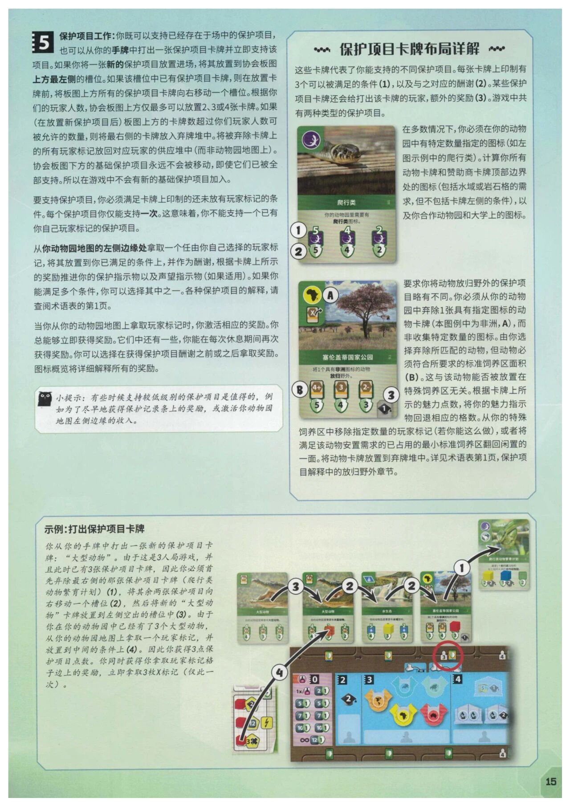
5 保护项目工作
保护项目工作:你既可以支持已经存在于场中的保护项目，也可以从你的手牌中打出一张保护项目卡牌并立即支持该项目。如果你将一张新的保护项目放置进场，将其放置到协会板图上方最左侧的槽位。如果该槽位中已有保护项目卡牌，则在放置卡牌前，将板图上方所有的保护项目卡牌向右移动一个槽位。根据你们的玩家人数，协会板图上方仅最多可以放置2、3或4张卡牌。如果（在放置新保护项目后）板图上方的卡牌数超过你们玩家人数可被允许的数量，则将最右侧的卡牌放入弃牌堆中。将被弃除卡牌上的所有玩家标记放回对应玩家的供应堆中（而非动物园地图上）。协会板图下方的基础保护项目永远不会被移动，即使它们已被全部支持。所以在游戏中不会有新的基础保护项目加入。
要支持保护项目，你必须满足卡牌上印制的还未放有玩家标记的条件。每个保护项目你仅能支持一次。这意味着，你不能支持一个已有你自己玩家标记的保护项目。
从你动物园地图的左侧边缘处拿取一个任由你自己选择的玩家标记，将其放置到你已满足的条件上，并作为酬谢，根据卡牌上所示的奖励推进你的保护指示物以及声望指示物（如果适用）。如果你能满足多个条件，你可以选择其中之一。各种保护项目的解释，请查阅术语表的第1页。
当你从你的动物园地图上拿取玩家标记时，你激活相应的奖励。你总能够立即获得奖励。它们中还有一些，你能在每次休息期间再次获得奖励。你可以选择在获得保护项目酬谢之前或之后拿取奖励。图标概览将详细解释所有的奖励。
〔图 猫头鹰图标的小提示框〕
小提示:有些时候支持较低级别的保护项目是值得的，例如为了尽早地获得保护记录条上的奖励，或激活你动物园地图左侧边缘的收入。
保护项目卡牌布局详解
这些卡牌代表了你能支持的不同保护项目。每张卡牌上印制有3个可以被满足的条件 (1)，以及与之对应的酬谢 (2)。某些保护项目卡牌还会给打出该卡牌的玩家，额外的奖励 (3)。游戏中共有两种类型的保护项目。
〔图 保护项目卡牌示例"爬行类"，蛇的照片，条件栏标注（1）与酬谢栏标注（2），卡面文字"你的动物园里需要有爬行类图标。"，三个条件/酬谢数值为5/5、4/4、2/2〕
在多数情况下，你必须在你的动物园中有特定数量指定的图标（如左图示例中的爬行类）。计算你所有动物卡牌和赞助商卡牌顶部边界处的图标（包括水域或岩石格的需求，但不包括卡牌左侧的条件），以及你合作动物园和大学上的图标。
〔图 保护项目卡牌示例"塞伦盖蒂国家公园"，稀树草原与金合欢树照片，左上角非洲图标标注（A），条件栏标注（B）与酬谢栏标注（3），卡面文字"将1个具有非洲图标的动物放归野外。"，三个条件数值为4+、3、2-，对应酬谢为5、4、3，另有1格奖励〕
要求你将动物放归野外的保护项目略有不同。你必须从你的动物园中弃除1张具有指定图标的动物卡牌（本图例中为非洲，A），而非收集特定数量的图标。由你选择弃除所匹配的动物，但动物必须符合所要求的标准饲养区面积 (B)。这与该动物能否被放置在特殊饲养区无关。根据卡牌上所示的魅力点数，将你的魅力指示物回退相应的格数。从你的特殊饲养区中移除指定数量的玩家标记（若你能这么做），或者将满足该动物安置需求的已占用的最小标准饲养区翻回闲置的一面。将动物卡牌放置到弃牌堆中。详见术语表第1页，保护项目解释中的放归野外章节。
示例：打出保护项目卡牌
你从你的手牌中打出一张新的保护项目卡牌："大型动物"。由于这是3人局游戏，并且此时已有3张保护项目卡牌，因此你必须首先弃除最右侧的那张保护项目卡牌（爬行类动物繁育计划)(1），将其余两张保护项目向右移动一个槽位（2），然后将新的"大型动物"卡牌放置到左侧空出的槽位中（3）。由于你在你的动物园中已经有了3个大型动物，从你的动物园地图上拿取一个玩家标记，并放置到中间的条件上（4）。因此你获得3点保护项目点数。你同时获得你拿取玩家标记格子边上的奖励，立即拿取3枚X标记（仅此一次）。
〔图 保护项目槽位示例图，四张保护项目卡牌带3、2、2、1编号箭头;下方为协会板图与左侧边缘认捐栏特写，带4编号箭头;右上角为"大型动物"保护项目卡牌〕
(页码：15)
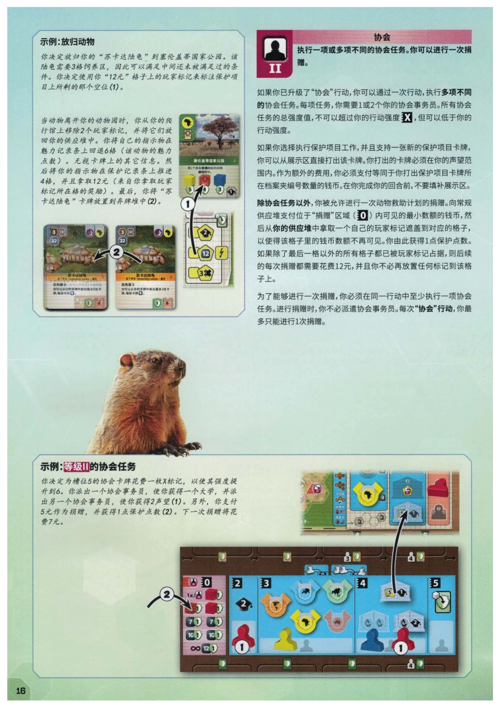
示例：放归动物
你决定放归你的"苏卡达陆龟"到塞伦盖蒂国家公园。该陆龟需要3格饲养区，因此可以满足中间还未被满足过的条件。你决定使用你"12元"格子上的玩家标记来标注保护项目上所剩的那个空位（1）。
当动物离开你的动物园时，你从你的爬行馆上移除2个玩家标记，并将它们放回你的供应堆中。你将自己的指示物在魅力记录条上回退6格（该动物的魅力点数）。无视卡牌上的其它信息。然后将你的指示物在保护记录条上推进4格，并且拿取12元（来自你拿取玩家标记所在格的奖励）。最后，你将"苏卡达陆龟"卡牌放置到弃牌堆中（2）。
〔图 塞伦盖蒂国家公园保护项目卡牌，三个条件格上放置黄、红、蓝三色玩家标记，带1编号箭头指向红色标记;左下角为两张"苏卡达陆龟"动物卡牌（正面与背面），带2编号箭头;右侧为动物园地图左侧边缘认捐栏，可见2、12、3X等格子〕
协会
〔图 协会行动卡牌图标，人物剪影，下方标"II"〕
执行一项或多项不同的协会任务。你可以进行一次捐赠。
如果你已升级了"协会"行动，你可以通过一次行动，执行多项不同的协会任务。每项任务，你需要1或2个你的协会事务员。所有协会任务的总强度值，不可以超过你的行动强度 X，但可以低于你的行动强度。
如果你选择执行保护项目工作，并且支持一张新的保护项目卡牌，你可以从展示区直接打出该卡牌。你打出的卡牌必须在你的声望范围内。作为额外的费用，你必须支付等同于你打出保护项目卡牌所在档案夹编号数量的钱币。在你完成你的回合前，不要填补展示区。
除协会任务以外，你被允许进行一次动物救助计划的捐赠。向常规供应堆支付位于"捐赠"区域（0）内可见的最小数额的钱币，然后从你的供应堆中拿取一个自己的玩家标记遮盖到对应的格子，以使得该格子里的钱币数额不再可见。你由此获得1点保护点数。如果除了最后一格以外的所有格子都已被玩家标记占据，则后续的每次捐赠都需要花费12元，并且你不必再放置任何标记到该格子上。
为了能够进行一次捐赠，你必须在同一行动中至少执行一项协会任务。进行捐赠时，你不必派遣协会事务员。每次"协会"行动，你最多只能进行1次捐赠。
〔图 土拨鼠（草原犬鼠）照片，横跨页面中部〕
示例：等级II的协会任务
你决定为槽位5的协会卡牌花费一枚X标记，以使其强度提升到6。你派出一个协会事务员，使你获得一个大学，并派出另一个协会事务员，使你获得2声望（1）。另外，你支付5元作为捐赠，并获得1点保护点数（2）。下一次捐赠将花费7元。
〔图 协会板图示例，上方为协会卡牌展示区与顶板，下方为协会任务槽位0-5及协会事务员、声望记录条，带1、2编号箭头〕
(页码：16)
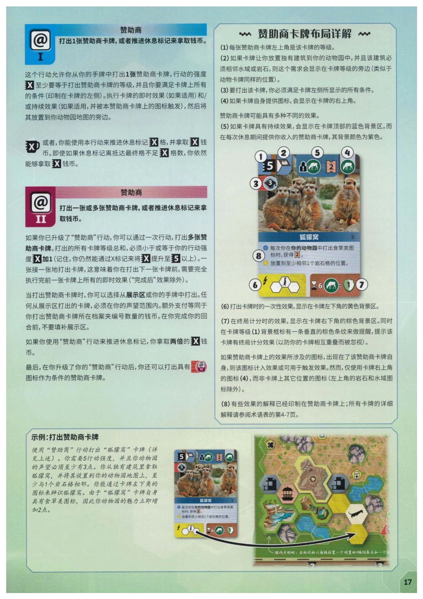
赞助商（行动等级 I）
〔图 蓝色行动框，"@ 图标"下方标罗马数字 I〕
打出1张赞助商卡牌，或者推进休息标记来拿取钱币。
这个行动允许你从你的手牌中打出1张赞助商卡牌，行动的强度 X 至少要等于打出赞助商卡牌的等级，并且你要满足卡牌上所有的条件（印制在卡牌的左侧）。执行卡牌的即时效果（如果适用）和/或持续效果（如果适用，并被本赞助商卡牌上的图标触发），然后将其放置到你动物园地图的旁边。
〔休息标记图标〕或者，你能使用本行动来推进休息标记 X 格，并拿取 X 钱币。即使如果休息标记离抵达最终格不足 X 格数，你依然能够拿取 X 钱币。〔原文如此："即使如果……离抵达"语句不通〕
赞助商（行动等级 II）
〔图 紫红色行动框，"@ 图标"下方标罗马数字 II〕
打出一张或多张赞助商卡牌，或者推进休息标记来拿取钱币。
如果你已升级了"赞助商"行动，你可以通过一次行动，打出多张赞助商卡牌。打出的所有卡牌等级总和，必须小于或等于你的行动强度 X 加1（记住，你仍然能通过X标记来将 X 提升至 5 以上）。一张接一张地打出卡牌，这意味着你在打出下一张卡牌前，需要完全执行完前一张卡牌上所有的即时效果（"完成后"效果除外）。
当打出赞助商卡牌时，你可以选择从展示区或你的手牌中打出。任何从展示区打出的卡牌，必须在你的声望范围内。额外支付等同于你打出赞助商卡牌所在档案夹编号数量的钱币。在你完成你的回合前，不要填补展示区。
如果你使用"赞助商"行动来推进休息标记，你拿取两倍的 X 钱币。
最后，在你升级了你的"赞助商"行动后，你还可以打出具有〔红底"@ II"图标〕图标作为条件的赞助商卡牌。
赞助商卡牌布局详解
(1) 每张赞助商卡牌左上角是该卡牌的等级。
(2) 如果卡牌让你放置独有建筑到你的动物园中，并且该建筑必须相邻水域或岩石，则这个需求会显示在卡牌等级的旁边（类似于动物卡牌同样的位置）。
(3) 要打出该卡牌，你必须满足卡牌左侧所显示的所有条件。
(4) 如果卡牌自身提供图标，会显示在卡牌的右上角。
赞助商卡牌可能具有多种不同的效果。
(5) 如果卡牌具有持续效果，会显示在卡牌顶部的蓝色背景区。而在每次休息期间提供你收入的赞助商卡牌，其背景颜色为紫色。
〔图 示例赞助商卡牌"狐獴窝"（狐獴照片，卡牌编号 248），带编号圆标 1-5 指向卡牌各部位：1 指等级"5"，2 指左上角的岩石/水域需求图标，5 指顶部蓝色持续效果区（人物加食草类图标与"2"票），4 指右上角绿色食草类图标，3 指左侧红色圆底毕业帽"3"图标〕
〔图 卡牌"狐獴窝"下半部，编号圆标 8 指卡牌文字，6 指左下角黄色一次性效果区（闪电图标与三六角格狐獴图案），7 指右下角棕色终局计分区（沙漏"6"、食草类图标、盾牌"1"）〕
卡牌文字（编号 8 所指）：
- 每次你在你的动物园中打出食草类图标时，获得 2。
- 放置到至少相邻1个岩石格的位置。
(6) 打出卡牌时的一次性效果，显示在卡牌左下角的黄色背景区。
(7) 在终局计分时的效果，显示在卡牌右下角的棕色背景区。同时在卡牌等级 (1) 背景框标有一条垂直的棕色条纹来做提醒，提示该卡牌有终局计分效果（以防你的卡牌相互重叠而被忽视）。
如果赞助商卡牌上的效果所涉及的图标，出现在了该赞助商卡牌自身，则该图标计入效果或可用于触发效果。然而，仅使用卡牌右上角的图标 (4），而非卡牌上其它位置的图标（左上角的岩石和水域图标除外）。
(8) 有些效果的解释已经印制在赞助商卡牌上；所有卡牌的详细解释请参阅术语表的第4-7页。
示例：打出赞助商卡牌
使用"赞助商"行动打出"狐獴窝"卡牌（详见上述）。你需要5行动强度，并且你动物园的声望必须至少有3点。你从独有建筑里拿取狐獴窝，并将其放置到你的动物园地图上，至少与1个岩石格相邻。你能通过卡牌左下角的图标来辨识狐獴窝。由于"狐獴窝"卡牌自身具有食草类图标，因此你动物园的魅力立即增加2点。
〔图 狐獴窝卡牌缩略图与动物园地图，黑色箭头从卡牌黄色效果区指向地图上高亮的黄色六角格；图内斜体小字图注："游戏开始时，在标记的六角格放置一个闲置的狐獴饲养区和一个…"〔后文在图中被截断，无法辨认〕；地图底部边缘可见数字 12、13〕
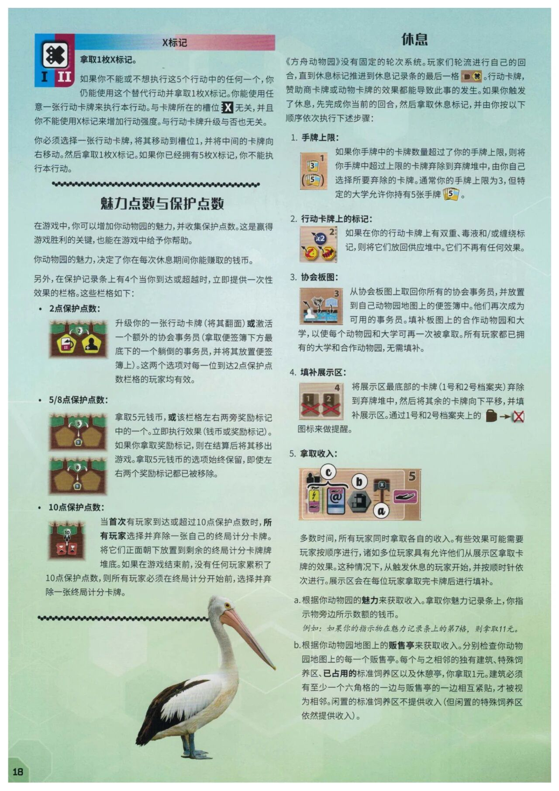
X标记（行动等级 I/II）
〔图 行动框，左半蓝色右半紫红色，"X 图标"下方并排标罗马数字 I 与 II〕
拿取1枚X标记。
如果你不能或不想执行这5个行动中的任何一个，你仍能使用这个替代行动并拿取1枚X标记。你能使用任意一张行动卡牌来执行本行动。与卡牌所在的槽位 X 无关，并且你不能使用X标记来增加行动强度。与行动卡牌升级与否也无关。
你必须选择一张行动卡牌，将其移动到槽位1，并将中间的卡牌向右移动。然后拿取1枚X标记。如果你已经拥有5枚X标记，你不能执行本行动。
〔分隔装饰：一排实心圆点〕
魅力点数与保护点数
在游戏中，你可以增加你动物园的魅力，并收集保护点数。这是赢得游戏胜利的关键，也能在游戏中给予你帮助。
你动物园的魅力，决定了你在每次休息期间你能赚取的钱币。
另外，在保护记录条上有4个当你到达或超越时，立即提供一次性效果的栏格。这些栏格如下：
- 2点保护点数：
〔图 保护记录条上"2"栏格示意图，下方两个黄色五边形图标（翻面行动卡牌图标与激活事务员图标），箭头指向盾牌"2"〕
升级你的一张行动卡牌（将其翻面）或激活一个额外的协会事务员（拿取便签簿下方最底下的一个躺倒的事务员，并将其放置便签簿上）〔原文如此："放置便签簿上"疑漏"到"字〕。这两个选项对每一位到达2点保护点数栏格的玩家均有效。
- 5/8点保护点数：
〔图 保护记录条上"5"与"8"栏格示意图各一幅，箭头从盾牌分别指向左右两个奖励标记〕
拿取5元钱币，或该栏格左右两旁奖励标记中的一个。立即执行效果（钱币或奖励标记）。如果你拿取奖励标记，则在结算后将其移出游戏。拿取5元钱币的选项始终保留，即使左右两个奖励标记都已被移除。
- 10点保护点数：
〔图 保护记录条上"10"栏格示意图，盾牌"10"下方为两张背面终局计分卡牌〕
当首次有玩家到达或超过10点保护点数时，所有玩家选择并弃除一张自己的终局计分卡牌。将它们正面朝下放置到剩余的终局计分卡牌牌堆底。如果在游戏结束前，没有任何玩家累积了10点保护点数，则所有玩家必须在终局计分开始前，选择并弃除一张终局计分卡牌。
〔图 鹈鹕照片，占据左栏下方大片区域〕
休息
《方舟动物园》没有固定的轮次系统。玩家们轮流进行自己的回合，直到休息标记推进到休息记录条的最后一格〔棕色与黄色休息标记图标〕。行动卡牌，赞助商卡牌或动物卡牌的效果都能导致此事的发生。如果你触发了休息，先完成你当前的回合，然后拿取休息标记，并由你按以下顺序依次执行下述步骤：
1. 手牌上限：
〔图 手牌图标，上标数字"1"，牌上标"3"，括号内牌上标"5"〕
如果你手牌中的卡牌数量超过了你的手牌上限，则将你手牌中超过上限的卡牌弃除到弃牌堆中，由你自己选择所要弃除的卡牌。通常你的手牌上限为3，但特定的大学允许你持有5张手牌〔"5"手牌图标〕。
2. 行动卡牌上的标记：
〔图 行动卡牌一角图标，上标数字"2"，含"x2"（双重）圆标与两个黄色六边形标记（毒液、缠绕），箭头指向卡牌外〕
如果在你的行动卡牌上有双重、毒液和/或缠绕标记，则将它们放回供应堆中。它们不再有任何效果。
3. 协会板图：
〔图 协会板图局部图标，上标数字"3"，白色事务员剪影与两枚协会板块，箭头指向下方〕
从协会板图上取回你所有的协会事务员，并放置到自己动物园地图上的便签簿中。他们再次成为可用的事务员。填补板图上的合作动物园和大学，以使每个动物园和大学可再一次被拿取。所有玩家都已拥有的大学和合作动物园，无需填补。
4. 填补展示区：
〔图 展示区图标，上标数字"4"，"1"号与"2"号档案夹上划红叉〕
将展示区最底部的卡牌（1号和2号档案夹）弃除到弃牌堆中，然后将其余的卡牌向下平移，并填补展示区。通过1号和2号档案夹上的〔档案夹指向划叉格的图标〕图标来做提醒。
5. 拿取收入：
〔图 行动条收入区图标，上标数字"5"；圆标 c 指闪电与"@"（赞助商）图标（有大括号汇聚），圆标 b 指六角格建筑图标，圆标 a 指 X 槽位图标，右端为紫色手掌图标〕
多数时间，所有玩家同时拿取各自的收入。有些效果可能需要玩家按顺序进行，诸如多位玩家具有允许他们从展示区拿取卡牌的效果。这种情况下，从触发休息的玩家开始，并按顺时针依次进行。展示区会在每位玩家拿取完卡牌后进行填补。
a. 根据你动物园的魅力来获取收入。拿取你魅力记录条上，你指示物旁边所示数额的钱币。
例如：如果你的指示物在魅力记录条上的第7格，则拿取11元。
b. 根据你动物园地图上的贩售亭来获取收入。分别检查你动物园地图上的每一个贩售亭。每个与之相邻的独有建筑、特殊饲养区、已占用的标准饲养区以及休憩亭，你拿取1元。建筑必须有至少一个六角格的一边与贩售亭的一边相互紧贴，才被视为相邻。闲置的标准饲养区不提供收入（但闲置的特殊饲养区依然提供收入）。
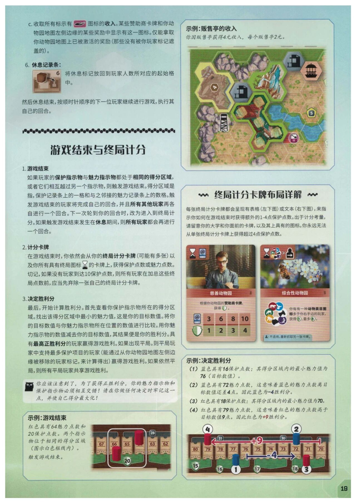
休息（续）
c. 收取所有标示有〔图 收入图标（手掌托硬币）〕图标的收入。某些赞助商卡牌和你动物园地图左侧边缘的某些奖励中显示有这一图标。仅能拿取你动物园地图上已被激活的奖励（那些没有被你玩家标记遮盖的）。
6. 休息记录条：
〔图 休息记录条示意图，一个方块从标有"6"的格子移向相邻格子〕
将休息标记放回到玩家人数所对应的起始格中。
然后休息结束，按顺时针顺序的下一位玩家继续进行游戏，执行其自己的回合。
游戏结束与终局计分
1. 游戏结束
如果玩家的保护指示物与魅力指示物都处于相同的得分区域，或者它们相互越过另一个指示物，则触发游戏结束。得分区域是指，保护记录条上的一格和与之邻接的魅力记录条上的数格。触发游戏结束的玩家将完成自己的回合，并且所有其他玩家再各自进行一个回合。下一次轮到你的回合时，改为进入到终局计分。如果触发游戏结束发生在休息期间，则所有玩家都会再进行一个回合。
2. 计分卡牌
在游戏结束时，你依然会从你的终局计分卡牌（可能有多张）以及你所有具有终局图标〔图 沙漏图标〕的卡牌上，获得保护点数或魅力点数。切记，如果没有玩家到达10保护点数，则所有玩家在加总这些终局点数前，应当先弃除一张自己的终局计分卡牌。
3. 决定胜利分
最后，开始计算胜利分。首先查看你保护指示物所在的得分区域。找出该得分区域中最小的魅力值，这是你的目标数值。将你的目标数值与你魅力指示物所在位置的数值进行比较。用你魅力指示物的数值减去你的目标数值，其结果便是你的胜利分。具有最高正胜利分的玩家赢得游戏胜利。如果出现平局。则平局玩家中支持最多保护项目的玩家（能通过从你动物园地图左侧边缘被移除的玩家标记，来计算得出）赢得游戏胜利。如果依然平局，则所有平局玩家共享游戏胜利。〔"如果出现平局。则"处为句号，原文如此〕
〔提示框，段首有猫头鹰图标〕你应该注意到了，为了获得正胜利分，你的魅力指示物和保护指示物必须相互交错！请在你做任何决定时牢记这一点，并使自己得分最大化！
示例：游戏结束
红色具有64魅力点数和20保护点数。两个指示物位于相同的得分区域（图示白色框线内）。
触发游戏结束。
〔图 计分记录条局部。上排魅力记录条数值 67、66、65、63、62 及角落"28"，下排保护记录条"20"；两个红色指示物与白色圆角框线圈出相同的得分区域〕
示例：贩售亭的收入
你因贩售亭获得4元收入，每个贩售亭2元。
〔图 动物园地图版块布局，含绿色围栏区域、两座贩售亭建筑、瞭望塔、凉亭、岩石、河流及其他设施〕
终局计分卡牌布局详解
每张终局计分卡牌都会呈现有表格（左下图）或文本（右下图），来指示你如何在游戏结束时获得额外的1-4点保护点数。出于计分考量，请留意你的大学和你面前的卡牌，以及其上具有的图标。你永远无法从单张终局计分卡牌上获得超过4点保护点数。
〔图 两张终局计分卡牌示例〕
- 左卡"慈善动物园"（红色卡名条，右上角小字数字〔无法辨认〕）：上部为照片（一名戴眼镜的男子坐在室内长椅上），左上角图标区有沙漏终局图标和"@"图标。卡牌文字："根据你动物园的赞助商卡牌，获得〔绿色护盾〕。"下方表格两行："@"图标行：3｜6｜8｜10；护盾图标行：1｜2｜3｜4。
- 右卡"综合性动物园"（红色卡名条，右上角小字数字〔无法辨认〕）：上部为照片（花丛中的蜜蜂），左上角图标区有沙漏终局图标、一簇六种动物类目圆形图标、">"号、以及一个带箭头的人形图标。卡牌文字："你每有一种动物类目图标多于你右手边的玩家，获得〔护盾1〕，最多〔护盾4〕。"底部蓝色横条："〔带箭头的人形图标〕：不适用。重新抓取另一张卡牌。"
示例：决定胜利分
（1）蓝色具有16保护点数；其得分区域内的最小魅力值为76（目标数值）。
（2）蓝色具有72魅力点数，这意味着蓝色的魅力点数离目标数值还差4点。因此蓝色为-4胜利分。
（3）红色具有18保护点数；其得分区域内的最小魅力值为70。
（4）红色具有79魅力点数，这意味着红色的魅力点数高于目标数值9点。因此红色为+9胜利分。
〔图 计分记录条。上排魅力记录条数值 80 至 70（含"31""30"角落数字），红色魅力指示物立于 79 处（上方标圈数字"4"），蓝色魅力指示物立于 72 处（上方标圈数字"2"），红色箭头"+9"从蓝色指向红色；下排保护记录条数值 15、16、17、18，蓝色保护指示物立于 16 处（标圈数字"1"），红色保护指示物立于 18 处（标圈数字"3"），蓝色箭头"-4"〕
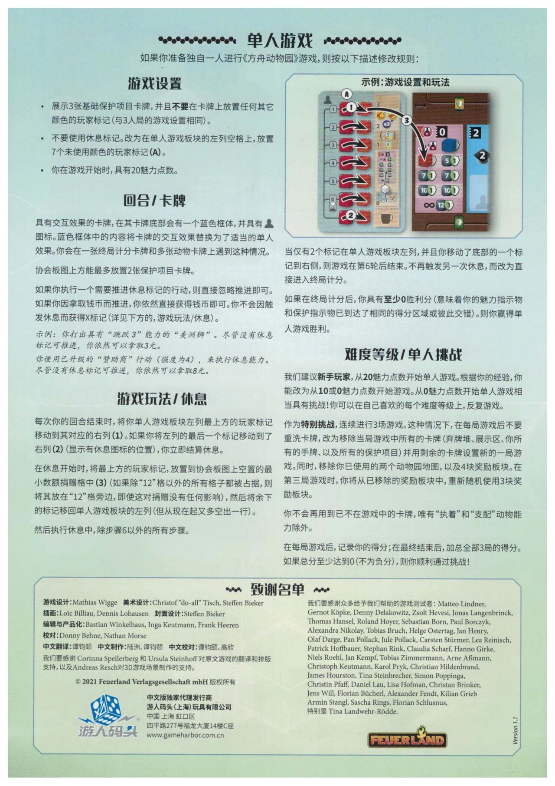
单人游戏
如果你准备独自一人进行《方舟动物园》游戏，则按以下描述修改规则：
游戏设置
- 展示3张基础保护项目卡牌，并且不要在卡牌上放置任何其它颜色的玩家标记（与3人局的游戏设置相同）。
- 不要使用休息标记。改为在单人游戏板块的左列空格上，放置7个未使用颜色的玩家标记(A)。
- 你在游戏开始时，具有20魅力点数。
〔图 示例：游戏设置和玩法。左侧为单人游戏板块：左列标有 1-6 的行，各行有成对红色玩家标记与黑色箭头，旁标注"A"及圈数字 1、2；中间窄列印有"3""2""1"、x2、5、3 等数值与图案；右侧为协会板图局部：粉色区域显示 0、2 以及"5 1""7 1""7 1""10 1""10 1""∞ 12 1"等成对数值格，旁边蓝色区域有"2"菱形标记与黑色"2"方块；黑色箭头（圈数字 3）从单人游戏板块指向协会板图的捐赠格〕
回合/卡牌
具有交互效果的卡牌，在其卡牌底部会有一个蓝色框体，并具有〔人形剪影〕图标。蓝色框体中的内容将卡牌的交互效果替换为了适当的单人效果。你会在一张终局计分卡牌和多张动物卡牌上遇到这种情况。
协会板图上方能最多放置2张保护项目卡牌。
如果你执行一个需要推进休息标记的行动，则直接忽略推进即可。如果你因拿取钱币而推进，你依然直接获得钱币即可。你不会因触发休息而获得X标记（详见下方的，游戏玩法/休息）。〔"详见下方的，"处标点原文如此〕
示例：你打出具有"跳跃3"能力的"美洲狮"。尽管没有休息标记可推进，你依然可以拿取3元。
你使用已升级的"赞助商"行动（强度为4），来执行休息能力。尽管没有休息标记可推进，你依然可以拿取8元。
游戏玩法/休息
每次你的回合结束时，将你单人游戏板块左列最上方的玩家标记移动到其对应的右列(1)。如果你将左列的最后一个标记移动到了右列(2)（显示有休息图标的位置），你立即结算休息。
在休息开始时，将最上方的玩家标记，放置到协会板图上空置的最小数额捐赠格中(3)（如果除"12"格以外的所有格子都被占据，则将其放在"12"格旁边，即使这对捐赠没有任何影响），然后将余下的标记移回单人游戏板块的左列（但从现在起又多空出一行）。
然后执行休息中，除步骤6以外的所有步骤。
当仅有2个标记在单人游戏板块左列，并且你移动了底部的一个标记到右侧，则游戏在第6轮后结束。不再触发另一次休息，而改为直接进入终局计分。
如果在终局计分后，你具有至少0胜利分（意味着你的魅力指示物和保护指示物已到达了相同的得分区域或彼此交错）。则你赢得单人游戏胜利。〔"交错）。则"处标点原文如此〕
难度等级/单人挑战
我们建议新手玩家，从20魅力点数开始单人游戏。根据你的经验，你能改为从10或0魅力点数开始游戏。从0魅力点数开始单人游戏相当具有挑战！你可以在自己喜欢的每个难度等级上，反复游戏。
作为特别挑战，连续进行3场游戏。这种情况下，在每局游戏后不要重洗卡牌，改为移除当局游戏中所有的卡牌（弃牌堆、展示区、你所有的手牌、以及所有的保护项目）并用剩余的卡牌设置新的一局游戏。同时，移除你已使用的两个动物园地图，以及4块奖励板块。在第三局游戏时，你将从已移除的奖励板块中，重新随机使用3块奖励板块。
你不会再用到已不在游戏中的卡牌，唯有"执着"和"支配"动物能力除外。
在每局游戏后，记录你的得分；在最终结束后，加总全部3局的得分。如果总分至少达到0（不为负分），则你顺利通过挑战！
致谢名单
游戏设计：Mathias Wigge 美术设计：Christof "do-all" Tisch, Steffen Bieker
插画：Loïc Billiau, Dennis Lohausen 封面设计：Steffen Bieker
编辑与产品化：Bastian Winkelhaus, Inga Keutmann, Frank Heeren
校对：Donny Behne, Nathan Morse
中文翻译：谭钧颐 中文制作：陆洲、谭钧颐 中文校对：谭钧颐、高欣
我们要感谢 Corinna Spellerberg 和 Ursula Steinhoff 对原文游戏的翻译和排版支持，以及 Andreas Resch 对3D游戏场景制作的支持。
我们要感谢众多给予我们帮助的游戏测试者：Matteo Lindner, Gernot Köpke, Denny Delakowitz, Zsolt Hevesi, Jonas Langenbrinck, Thomas Hansel, Roland Hoyer, Sebastian Born, Paul Borczyk, Alexandra Nikolay, Tobias Bruch, Helge Ostertag, Jan Henry, Olaf Darge, Pan Pollack, Jule Pollack, Carsten Stürmer, Lea Reinisch, Patrick Hoffbauer, Stephan Rink, Claudia Scharf, Hanno Girke, Niels Roehl, Jan Kempf, Tobias Zimmermann, Arne Aßmann, Christoph Keutmann, Karol Pryk, Christian Hildenbrand, James Hourston, Tina Steinbrecher, Simon Poppinga, Christin Pfaff, Daniel Lau, Lisa Hofman, Christan Brinker〔"Christan"原文如此〕， Jens Will, Florian Bücherl, Alexander Fendt, Kilian Grieb〔此处原文无标点〕 Armin Stangl, Sascha Rings, Florian Schlusnus, 特别是 Tina Landwehr-Rödde.
© 2021 Feuerland Verlagsgesellschaft mbH 版权所有
〔图 游人码头品牌标志（蓝色骰子图案，下方"游人码头"字样）〕
中文版独家代理发行商
游人码头（上海）玩具有限公司
中国 上海 虹口区
四平路277号福龙大厦14楼C座
www.gameharbor.com.cn
〔图 FEUERLAND 出版社标志；页面右下角竖排小字"Version 1.1"〕